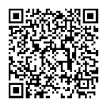

| 販売名 | 一般名 | 製造販売業者等 | 医療従事者向け | 患者向け | URL | 患者向け資材 QR Code |
| カルケンスカプセル100mg | アカラブルチニブ | 製造販売元／アストラゼネカ株式会社 | 適正使用ガイド | | | |
| セムブリックス錠20mg／セムブリックス錠40mg | アシミニブ塩酸塩 | 製造販売／ノバルティスファーマ株式会社 | 適正使用ガイド | | | |
| ストレンジック皮下注12mg／0.3mL／ストレンジック皮下注18mg／0.45mL／ストレンジック皮下注28mg／0.7mL／ストレンジック皮下注40mg／1mL／ストレンジック皮下注80mg／0.8mL | アスホターゼ アルファ（遺伝子組換え） | 製造販売元／アレクシオンファーマ合同会社 | 安全性・投与量に関する注意 | ストレンジックの治療を受ける患者さんとご家族の方へ | | |
| ヒュミラ皮下注20mgシリンジ0.2mL／ヒュミラ皮下注40mgシリンジ0.4mL／ヒュミラ皮下注80mgシリンジ0.8mL／ヒュミラ皮下注40mgペン0.4mL／ヒュミラ皮下注80mgペン0.8mL | アダリムマブ（遺伝子組換え） | 製造販売元／アッヴィ合同会社 | ヒュミラ適正使用ガイド | ヒュミラ自己注射のためのガイドブック | | |
| テセントリク点滴静注840mg／テセントリク点滴静注1200mg | アテゾリズマブ（遺伝子組換え） | 製造販売元／中外製薬株式会社 | 適正使用ガイド | 患者ハンドブック | | |
| メトアナ配合錠LD／メトアナ配合錠HD | アナグリプチン・メトホルミン塩酸塩配合剤 | 製造販売元／株式会社三和化学研究所 | 投与時チェックシート | メトアナ配合錠LD・HDを服用される患者さんへ | | |
| エドルミズ錠50mg | アナモレリン塩酸塩 | 製造販売／小野薬品工業株式会社 | 適正使用ガイド | エドルミズを服用される患者さんとご家族のみなさまへ | | |
| サフネロー点滴静注300mg | アニフロルマブ（遺伝子組換え） | 製造販売元／アストラゼネカ株式会社 | 適正使用ガイド | サフネローによる治療を安全に受けていただくために | | |
| ドプテレット錠20mg | アバトロンボパグマレイン酸塩 | 製造販売元／Swedish Orphan Biovitrum Japan 株式会社 | 適正使用ガイド | | | |
| アジンマ静注用1500 | アパダムターゼ アルファ（遺伝子組換え）・シナキサダムターゼ アルファ（遺伝子組換え） | 製造販売元／武田薬品工業株式会社 | アジンマ適正使用ガイド | | | |
| アーリーダ錠60mg | アパルタミド | 製造販売元／ヤンセンファーマ株式会社 | アーリーダ錠60㎎適正使用に関するお願い-間質性肺疾患のリスクについて | アーリーダ錠を服用される患者さんとご家族の皆様へ‐アーリーダ錠を服用するときの注意事項 | | |
| プロモーション提携／日本新薬株式会社 | 痙攣発作安全の手引き | | | |
| サイバインコ錠50mg／サイバインコ錠100mg／サイバインコ錠200mg | アブロシチニブ | 製造販売元／ファイザー株式会社 | 適正使用ガイド | サイバインコを服用されるアトピー性皮膚炎患者さんへ | | |
| オテズラ錠10mg／オテズラ錠20mg／オテズラ錠30mg | アプレミラスト | 製造販売元／アムジェン株式会社 | 適正使用ガイド | | | |
| ベージニオ錠50mg／ベージニオ錠100mg／ベージニオ錠150mg | アベマシクリブ | 製造販売元／日本イーライリリー株式会社 | 医療関係者の方へのお願い ベージニオ錠の注意を要する副作用とその対策－間質性肺疾患－ | ベージニオ錠を服用される患者さんへ：間質性肺疾患 | | |
| バベンチオ点滴静注200mg | アベルマブ（遺伝子組換え） | 製造販売元／メルクバイオファーマ株式会社 | 適正使用ガイド | バベンチオによる治療を受ける患者さんへ | | |
| アリケイス吸入液590mg | アミカシン硫酸塩 | 製造販売業者／インスメッド合同会社 | アリケイス吸入液590mg_RMPm | | | |
| アラグリオ内用剤1.5g | アミノレブリン酸塩酸塩 | 製造販売元／SBIファーマ株式会社 | 適正使用ガイド | | | |
| アラグリオ顆粒剤分包1.5g | アミノレブリン酸塩酸塩 | 製造販売元／SBIファーマ株式会社 | 適正使用ガイド | | | |
| エビリファイ持続性水懸筋注用300mg／エビリファイ持続性水懸筋注用400mg | アリピプラゾール水和物 | 製造販売元／大塚製薬株式会社 | 適正使用ガイド（エビリファイ持続性水懸筋注用／双極I型障害における気分エピソードの再発・再燃抑制） | Q&A（エビリファイ持続性水懸筋注用／双極I型障害における気分エピソードの再発・再燃抑制） | | |
| エビリファイ持続性水懸筋注用300mgシリンジ／エビリファイ持続性水懸筋注用400mgシリンジ | アリピプラゾール水和物 | 製造販売元／大塚製薬株式会社 | 適正使用ガイド（エビリファイ持続性水懸筋注用／双極I型障害における気分エピソードの再発・再燃抑制） | Q&A（エビリファイ持続性水懸筋注用／双極I型障害における気分エピソードの再発・再燃抑制） | | |
| アレセンサカプセル150mg | アレクチニブ塩酸塩 | 製造販売元／中外製薬株式会社 | アレセンサ適正使用ガイド（ALK融合遺伝子陽性の切除不能な進行・再発の非小細胞肺癌） | アレセンサ患者ハンドブック（ALK融合遺伝子陽性の切除不能な進行・再発の非小細胞肺癌） | | |
| アレセンサ適正使用ガイド（再発又は難治性のALK融合遺伝子陽性の未分化大細胞リンパ腫） | アレセンサ患者ハンドブック（再発又は難治性のALK融合遺伝子陽性の未分化大細胞リンパ腫） | | |
| マブキャンパス点滴静注30mg | アレムツズマブ（遺伝子組換え） | 製造販売元／サノフィ株式会社 | マブキャンパス点滴静注30mg 適正使用ガイド | | | |
| アシテアダニ舌下錠100単位（IR）／アシテアダニ舌下錠300単位（IR） | アレルゲンエキス | 製造販売元（輸入）／塩野義製薬株式会社 | PDF以外の資材一覧（医療従事者向け） | アシテアを服用される患者さんと保護者の方へ | | |
| 提携／STALLERGENES GREER | アシテアダニ舌下錠 処方までの流れと留意点 | アシテアを服用される患者さんや保護者の方へ（携帯カード） | | |
| アシテアダニ舌下錠 安全対策へのご協力のお願い | アシテアダニ舌下錠の治療を受けられる患者さんへ | | |
| アシテアダニ舌下錠 適正にご使用いただくために | | | |
| ミティキュアダニ舌下錠3,300JAU／ミティキュアダニ舌下錠10,000JAU | アレルゲンエキス | 製造販売元／鳥居薬品株式会社 | 処方いただくための留意点 | ミティキュアを服用される患者さんへ | | |
| 安全対策に関するご協力のお願い | ミティキュアを飲むみなさんとおうちの方へ | | |
| 適正にご使用いただくために | 患者携帯カード | | |
| オンデキサ静注用200mg | アンデキサネット アルファ（遺伝子組換え） | 製造販売／アストラゼネカ株式会社 | 適正使用ガイド | | | |
| ニンラーロカプセル2.3mg／ニンラーロカプセル3mg／ニンラーロカプセル4mg | イキサゾミブクエン酸エステル | 製造販売元／武田薬品工業株式会社 | 適正使用ガイド | ニンラーロを服用される患者さんへ | | |
| トルツ皮下注80mgオートインジェクター／トルツ皮下注80mgシリンジ | イキセキズマブ（遺伝子組換え） | 製造販売元／日本イーライリリー株式会社 | 適正使用ガイド | 使い方クイックガイド（オートインジェクター） | | |
| 使い方クイックガイド（シリンジ） | | |
| エパデールEMカプセル2g | イコサペント酸エチル | 製造販売元／持田製薬株式会社 | エパデール製品選択過誤注意喚起指導用リーフ | エパデールEMカプセル2gからエパデールカプセル300・エパデールS300・エパデールS600・エパデールS900へ変わる患者さんへ | | |
| エパデールカプセル300・エパデールS300・エパデールS600・エパデールS900からエパデールEMカプセル2gへ変わる患者さんへ | | |
| サークリサ点滴静注100mg／サークリサ点滴静注500mg | イサツキシマブ（遺伝子組換え） | 製造販売元／サノフィ株式会社 | 医療従事者向け資材（適正使用ガイド） | 患者向け資材 | | |
| 輸血検査部門向け資材 | | | |
| クレセンバカプセル100mg | イサブコナゾニウム硫酸塩 | 製造販売元／旭化成ファーマ株式会社 | 「妊娠している女性、妊娠している可能性のある女性又は妊娠する可能性のある女性」への投与に関する適正使用のお願い | | | |
| クレセンバ点滴静注用200mg | イサブコナゾニウム硫酸塩 | 製造販売元／旭化成ファーマ株式会社 | 「妊娠している女性、妊娠している可能性のある女性又は妊娠する可能性のある女性」への投与に関する適正使用のお願い | | | |
| プリズバインド静注液2.5g | イダルシズマブ（遺伝子組換え） | 製造販売元／日本ベーリンガーインゲルハイム株式会社 | プリズバインド適正使用ガイド | | | |
| アイノフロー吸入用800ppm | 一酸化窒素 | 選任外国製造医薬品等製造販売業者／エア・ウォーター株式会社 | ー心臓手術の周術期においてーアイノフローをより安全に使用いただくために | | | |
| アイノフロー吸入用800ppm | 一酸化窒素 | 選任外国製造医薬品等製造販売業者／ | ー心臓手術の周術期においてーアイノフローをより安全に使用いただくために | | | |
| ヒュンタラーゼ脳室内注射液 15 mg | イデュルスルファーゼ ベータ（遺伝子組換え） | 製造販売元／クリニジェン株式会社 | 投与ガイド | | | |
| ユプリズナ点滴静注100mg | イネビリズマブ（遺伝子組換え） | 製造販売元／田辺三菱製薬株式会社 | 適正使用ガイド | ユプリズナによる治療を受ける患者さんへ | | |
| ベスポンサ点滴静注用1mg | イノツズマブ オゾガマイシン（遺伝子組換え） | 製造販売元／ファイザー株式会社 | 適正使用ガイド | | | |
| コララン錠2.5mg／コララン錠5mg／コララン錠7.5mg | イバブラジン塩酸塩 | 製造販売／小野薬品工業株式会社 | 適正使用ガイド | コララン錠を服用される患者さんへ | | |
| ヤーボイ点滴静注液20mg／ヤーボイ点滴静注液50mg | イピリムマブ（遺伝子組換え） | 製造販売元／ブリストル・マイヤーズ スクイブ株式会社 | 適正使用ガイド | ヤーボイによる治療を受ける方へ | | |
| イムブルビカカプセル140mg | イブルチニブ | 製造販売元／ヤンセンファーマ株式会社 | イムブルビカ適正使用ガイド | | | |
| スーグラ錠25mg／スーグラ錠50mg | イプラグリフロジン Ｌ－プロリン | 製造販売／アステラス製薬株式会社 | スーグラ錠 25mg，50mg適正使用ガイド | 患者カード「私は糖尿病の治療のためスーグラ錠（SGLT2阻害薬）を服用しています。」 | | |
| 販売提携／寿製薬株式会社 | | 服薬指導用下敷き（1型糖尿病） | | |
| | 服薬時注意喚起カード「スーグラ錠を服薬される1型糖尿病患者さんへ」 | | |
| | 服薬説明リーフ「スーグラ錠を服薬される患者さんへ」 | | |
| | 服薬説明冊子「スーグラ錠25mg，50mgを服薬される患者さんへ」 | | |
| オニバイド点滴静注43mg | イリノテカン塩酸塩水和物 | 製造販売元／日本セルヴィエ株式会社 | 適正使用ガイド | | | |
| ベンテイビス吸入液10μg | イロプロスト | 製造販売元／バイエル薬品株式会社 | | 患者向け資材（患者用指導箋：ベンテイビスを吸入される患者さんへ） | | |
| ゼオマイン筋注用50単位／ゼオマイン筋注用100単位／ゼオマイン筋注用200単位 | インコボツリヌストキシンＡ | 製造販売元（輸入元）／帝人ファーマ株式会社 | PDF 以外の資材一覧 | ゼオマイン® 筋注用による上肢痙縮・下肢痙縮治療を受ける患者さんとご家族のみなさまへ：XEO004 | | |
| ゼオマイン®筋注用管理記録簿：XEO005 | | | |
| ゼオマイン®筋注用適正使用のためのフロー：XEO003 | | | |
| フィアスプ注 フレックスタッチ／フィアスプ注 ペンフィル | インスリン アスパルト（遺伝子組換え） | 製造販売元／ノボ ノルディスク ファーマ株式会社 | フィアスプ注フレックスタッチ／フィアスプ注ペンフィル 医療従事者向 | フィアスプ注フレックスタッチ／フィアスプ注ペンフィル 患者向 | | |
| フィアスプ注 100単位/mL | インスリン アスパルト（遺伝子組換え） | 製造販売元／ノボ ノルディスク ファーマ株式会社 | フィアスプ注100単位/mL 医療従事者向 | フィアスプ注100単位/mL 患者向 | | |
| ソリクア配合注ソロスター | インスリン グラルギン（遺伝子組換え）・リキシセナチド配合剤 | 製造販売元／サノフィ株式会社 | 医薬品リスク管理計画書 医療従事者向け資材 | 医薬品リスク管理計画書 患者向け資材 | | |
| インスリン グラルギンBS注カート「リリー」／インスリン グラルギンBS注ミリオペン「リリー」 | インスリン グラルギン（遺伝子組換え） | 製造販売元／日本イーライリリー株式会社 | | 患者用注意文書_カート | | |
| 患者用注意文書_ミリオペン | | |
| ゾルトファイ配合注フレックスタッチ | インスリン デグルデク（遺伝子組換え）・リラグルチド（遺伝子組換え）配合剤 | 製造販売元／ノボ ノルディスク ファーマ株式会社 | | ゾルトファイ配合注フレックスタッチ | | |
| ルムジェブ注カート／ルムジェブ注ミリオペン／ルムジェブ注ミリオペンHD | インスリン リスプロ（遺伝子組換え） | 製造販売元／日本イーライリリー株式会社 | ルムジェブ投与過誤注意喚起指導用リーフ | ルムジェブ投与過誤注意喚起リーフ | | |
| ルムジェブ注100単位/mL | インスリン リスプロ（遺伝子組換え） | 製造販売元／日本イーライリリー株式会社 | ルムジェブ投与過誤注意喚起指導用リーフ | ルムジェブ投与過誤注意喚起リーフ | | |
| レミケード点滴静注用100 | インフリキシマブ（遺伝子組換え） | 製造販売元／田辺三菱製薬株式会社 | 製品情報概要 全疾患版 | レミケードによる治療を受ける患者さんへ クローン病の治療薬「レミケード」について | | |
| 製造元／Janssen Biotech, Inc. | | レミケードによる治療を受ける患者さんへ ベーチェット病の治療薬 レミケード | | |
| | レミケードによる治療を受ける患者さんへ 乾癬の治療薬「レミケード」 | | |
| | レミケードによる治療を受ける患者さんへ 潰瘍性大腸炎の治療薬「レミケード」について | | |
| | レミケードによる治療を受ける患者さんへ 関節リウマチの治療薬 レミケード | | |
| | レミケードを使用される患者さんへ 強直性脊椎炎の治療薬「レミケード」について | | |
| | 川崎病の急性期において 「レミケード」を使用される方へ | | |
| インフリキシマブBS点滴静注用100mg「あゆみ」 | インフリキシマブ（遺伝子組換え） | 製造販売元／あゆみ製薬株式会社 | 適正使用ガイド | | | |
| インフリキシマブBS点滴静注用100mg「日医工」 | インフリキシマブ（遺伝子組換え） | 製造販売元／日医工株式会社 | 適正使用ガイド | | | |
| インフリキシマブBS点滴静注用100mg「ファイザー」 | インフリキシマブ（遺伝子組換え） | 製造販売元／ファイザー株式会社 | 適正使用ガイド | | | |
| ステラーラ点滴静注130mg | ウステキヌマブ（遺伝子組換え） | 製造販売元／ヤンセンファーマ株式会社 | ステラーラ適正使用ガイド_クローン病_潰瘍性大腸炎 | ステラーラによるクローン病治療について | | |
| 販売元／田辺三菱製薬株式会社 | ステラーラ適正使用ガイド_尋常性乾癬_関節症性乾癬 | ステラーラによる乾癬治療について | | |
| | ステラーラによる潰瘍性大腸炎治療について | | |
| ステラーラ皮下注45mgシリンジ | ウステキヌマブ（遺伝子組換え） | 製造販売元／ヤンセンファーマ株式会社 | ステラーラ適正使用ガイド_クローン病_潰瘍性大腸炎 | ステラーラによるクローン病治療について | | |
| 販売元／田辺三菱製薬株式会社 | ステラーラ適正使用ガイド_尋常性乾癬_関節症性乾癬 | ステラーラによる乾癬治療について | | |
| | ステラーラによる潰瘍性大腸炎治療について | | |
| リンヴォック錠45mg／リンヴォック錠30mg／リンヴォック錠15mg／リンヴォック錠7.5mg | ウパダシチニブ水和物 | 製造販売元／アッヴィ合同会社 | リンヴォック適正使用ガイド（AD） | リンヴォック患者向けカード | | |
| リンヴォック適正使用ガイド（RA、PsA、AS、nr-axSpA） | | | |
| リンヴォック適正使用ガイド（UC、CD） | | | |
| ソリリス点滴静注300mg | エクリズマブ（遺伝子組換え） | 製造販売元／アレクシオンファーマ合同会社 | 患者安全性カード | ソリリス・ユルトミリス治療で気を付けてほしいこと（全身型重症筋無力症） | | |
| 適正使用ガイド（全身型重症筋無力症、視神経脊髄炎スペクトラム障害） | ソリリス・ユルトミリス治療で気を付けてほしいこと（発作性夜間ヘモグロビン尿症） | | |
| ソリリス・ユルトミリス治療で気を付けてほしいこと（視神経脊髄炎スペクトラム障害） | | |
| ソリリス・ユルトミリス治療で気を付けてほしいこと（非典型溶血性尿毒症症候群） | | |
| 患者安全性カード | | |
| ミネブロ錠1.25mg／ミネブロ錠2.5mg／ミネブロ錠5mg／ミネブロOD錠1.25mg／ミネブロOD錠2.5mg／ミネブロOD錠5mg | エサキセレノン | 製造販売元／第一三共株式会社 | ミネブロ適正使用ガイド -高カリウム血症関連- | ミネブロを服用される患者さんへ | | |
| ロコアテープ | エスフルルビプロフェン・ハッカ油 | 製造販売／大正製薬株式会社 | ロコア_医療関係者向け資材 | ロコア_患者向け指導箋 | | |
| ロコアテープ | エスフルルビプロフェン・ハッカ油 | 製造販売／大正製薬株式会社 | ロコア_医療関係者向け資材 | ロコア_患者向け指導箋 | | |
| ラジカット内用懸濁液2.1% | エダラボン | 製造販売元／田辺三菱製薬株式会社 | 筋萎縮性側索硬化症（ALS）適正使用ガイド | ラジカット内用懸濁液2.1%を服用される患者さんとご家族の方へ | | |
| ラジカット注30mg | エダラボン | 製造販売元／田辺三菱製薬株式会社 | 筋萎縮性側索硬化症（ALS）在宅診療の手引き | ラジカットによる筋萎縮性側索硬化症（ALS）治療を受けられる患者さんとご家族の方へ | | |
| 筋萎縮性側索硬化症（ALS）適正使用ガイド | | | |
| ラジカット点滴静注バッグ30mg | エダラボン | 製造販売元／田辺三菱製薬株式会社 | 筋萎縮性側索硬化症（ALS）在宅診療の手引き | ラジカットによる筋萎縮性側索硬化症（ALS）治療を受けられる患者さんとご家族の方へ | | |
| 筋萎縮性側索硬化症（ALS）適正使用ガイド | | | |
| エナロイ錠2mg／エナロイ錠4mg | エナロデュスタット | 製造販売元／日本たばこ産業株式会社 | エナロイ錠2mg・4mg 適正使用ガイド | エナロイ錠を服用される患者さんへ | | |
| ロズリートレクカプセル100mg／ロズリートレクカプセル200mg | エヌトレクチニブ | 製造販売元／中外製薬株式会社 | 適正使用ガイド | 緊急時連絡カード | | |
| ヒフデュラ配合皮下注 | エフガルチギモド アルファ（遺伝子組換え）・ボルヒアルロニダーゼ アルファ（遺伝子組換え） | 製造販売元／アルジェニクスジャパン株式会社 | ヒフデュラ配合皮下注 適正使用ガイド | ヒフデュラ配合皮下注による治療を受ける 患者さんとご家族の方へ | | |
| ウィフガート点滴静注400mg | エフガルチギモド アルファ（遺伝子組換え） | 製造販売元／アルジェニクスジャパン株式会社 | ウィフガート点滴静注400㎎_適正使用ガイド（全身型重症筋無力症） | ウィフガートを投与される方へ（全身型重症筋無力症） | | |
| ウィフガート点滴静注400㎎_適正使用ガイド（慢性特発性血小板減少性紫斑病） | ウィフガートを投与される方へ（慢性特発性血小板減少性紫斑病） | | |
| エプキンリ皮下注4mg／エプキンリ皮下注48mg | エプコリタマブ（遺伝子組換え） | 製造販売元（輸入）／ジェンマブ株式会社 | 適正使用ガイド | 患者向け資材 | | |
| レパーサ皮下注140mgペン | エボロクマブ（遺伝子組換え） | 製造販売／アムジェン株式会社 | 適正使用ガイド | | | |
| レパーサ皮下注420mgオートミニドーザー | エボロクマブ（遺伝子組換え） | 製造販売（輸入）／アムジェン株式会社 | 適正使用ガイド | | | |
| ヘムライブラ皮下注30mg／ヘムライブラ皮下注60mg／ヘムライブラ皮下注90mg／ヘムライブラ皮下注105mg／ヘムライブラ皮下注150mg | エミシズマブ（遺伝子組換え） | 製造販売元／中外製薬株式会社 | ヘムライブラ適正使用ガイド（先天性血友病A編） | ヘムライブラ皮下注ハンドブック（先天性血友病Aインヒビター保有編） | | |
| ヘムライブラ適正使用ガイド（後天性血友病A編） | ヘムライブラ皮下注ハンドブック（先天性血友病Aインヒビター非保有編） | | |
| ヘムライブラ皮下注ハンドブック（後天性血友病A編） | | |
| ヘムライブラ連絡カード（先天性血友病Aインヒビター保有編） | | |
| ヘムライブラ連絡カード（先天性血友病Aインヒビター非保有編） | | |
| ヘムライブラ連絡カード（後天性血友病A編_投与中） | | |
| ヘムライブラ連絡カード（後天性血友病A編_投与終了後） | | |
| サデルガカプセル100mg | エリグルスタット酒石酸塩 | 製造販売元／サノフィ株式会社 | サデルガカプセル100mg 適正使用ガイド | サデルガカプセル100mg 患者カード | | |
| ハラヴェン静注1mg | エリブリンメシル酸塩 | 製造販売元（輸入元）／エーザイ株式会社 | 適正使用ガイド（悪性軟部腫瘍） | | | |
| エルレフィオ皮下注44mg／エルレフィオ皮下注76mg | エルラナタマブ（遺伝子組換え） | 製造販売元／ファイザー株式会社 | 適正使用ガイド | エルレフィオを投与される方へ | | |
| アイモビーグ皮下注70mgペン | エレヌマブ（遺伝子組換え） | 製造販売／アムジェン株式会社 | 適正使用ガイド | アイモビーグの投与を受ける患者さんへ | | |
| 適正使用ガイド_ラテックス品 | | | |
| アイモビーグ皮下注70mgペン_ラテックス品 | エレヌマブ（遺伝子組換え） | 製造販売／アムジェン株式会社 | 適正使用ガイド | アイモビーグの投与を受ける患者さんへ | | |
| 適正使用ガイド_ラテックス品 | | | |
| エムプリシティ点滴静注用300mg／エムプリシティ点滴静注用400mg | エロツズマブ（遺伝子組換え） | 製造販売元／ブリストル・マイヤーズ スクイブ株式会社 | 適正使用ガイド | | | |
| ビラフトビカプセル50mg／ビラフトビカプセル75mg | エンコラフェニブ | 製造販売／小野薬品工業株式会社 | 適正使用ガイド | | | |
| ゾコーバ錠125mg（旧製品：凸錠） | エンシトレルビル フマル酸 | 製造販売元／塩野義製薬株式会社 | ゾコーバ錠「妊娠している女性、妊娠している可能性のある女性、又は妊娠する可能性のある女性」に関するお願い | ゾコーバ錠を処方された女性の患者さんとご家族のみなさまへ | | |
| ゾコーバ錠125mg | エンシトレルビル フマル酸 | 製造販売元／塩野義製薬株式会社 | ゾコーバ錠「妊娠している女性、妊娠している可能性のある女性、又は妊娠する可能性のある女性」に関するお願い | ゾコーバ錠を処方された女性の患者さんとご家族のみなさまへ | | |
| トラディアンス配合錠AP／トラディアンス配合錠BP | エンパグリフロジン・リナグリプチン配合剤 | 製造販売元／日本ベーリンガーインゲルハイム株式会社 | トラディアンス配合錠AP･BP 適正使用のお願い | トラディアンス配合錠AP･BPを服用される患者さんへ | | |
| ジャディアンス錠10mg／ジャディアンス錠25mg | エンパグリフロジン | 製造販売元／日本ベーリンガーインゲルハイム株式会社 | ジャディアンス錠10mg・25mg適正使用のお願い（2型糖尿病） | ジャディアンスを服用される患者さんへ（効能共通） | | |
| 販売提携／日本イーライリリー株式会社 | ジャディアンス錠10mg適正使用のお願い（慢性心不全） | | | |
| ジャディアンス錠10mg適正使用のお願い（慢性腎臓病） | | | |
| パドセブ点滴静注用20㎎／パドセブ点滴静注用30㎎ | エンホルツマブ ベドチン（遺伝子組換え） | 製造販売／アステラス製薬株式会社 | パドセブを適正にご処方いただくために | パドセブによる治療を受ける患者さんとご家族へ | | |
| ボトックスビスタ注用50単位 | Ａ型ボツリヌス毒素 | 製造販売元／アッヴィ合同会社 | 医療従事者向けの資料 | | | |
| ボトックス注用50単位／ボトックス注用100単位 | Ａ型ボツリヌス毒素 | 製造販売元／グラクソ・スミスクライン株式会社 | PDF 以外の資材一覧 | 患者冊子（過活動膀胱・神経因性膀胱ハンドブック） | | |
| 「治療までの流れ」 | | | |
| 「管理の記録」 | | | |
| 患者登録票 | | | |
| オキシコンチンTR錠5mg／オキシコンチンTR錠10mg／オキシコンチンTR錠20mg／オキシコンチンTR錠40mg | オキシコドン塩酸塩水和物 | 製造販売元／シオノギファーマ株式会社 | PDF以外の資材一覧（医療従事者向け） | オキシコンチンTR錠で慢性疼痛の治療を受けられる患者さまへ | | |
| 販売元／塩野義製薬株式会社 | 慢性疼痛に対する適正使用ガイドブック | | | |
| タグリッソ錠40mg／タグリッソ錠80mg | オシメルチニブメシル酸塩 | 製造販売元／アストラゼネカ株式会社 | 適正使用ガイド | タグリッソを服用される患者さんとご家族へ | | |
| 注意喚起カード | | |
| イスツリサ錠1mg／イスツリサ錠5mg | オシロドロスタットリン酸塩 | 製造販売元／レコルダティ・レア・ディジーズ・ジャパン株式会社 | | イスツリサ錠によるクッシング症候群の治療を受けられるみなさまへ | | |
| ナノゾラ皮下注30mgシリンジ／ナノゾラ皮下注30mgオートインジェクター | オゾラリズマブ（遺伝子組換え） | 製造販売／大正製薬株式会社 | 医療従事者向け資材（大正製薬） | 患者向け資材（大正製薬） | | |
| オンジェンティス錠25mg | オピカポン | 製造販売／小野薬品工業株式会社 | オンジェンティス錠を適正にご使用いただくために | オンジェンティス錠を服用される患者さんとご家族へ | | |
| ケシンプタ皮下注20mgペン | オファツムマブ（遺伝子組換え） | 製造販売（輸入）／ノバルティスファーマ株式会社 | 適正使用ガイド | はじめてのケシンプタ | | |
| 自己投与ガイドブック | | |
| マリゼブ錠12.5mg／マリゼブ錠25mg | オマリグリプチン | 製造販売元／MSD株式会社 | 服薬指導Q&Aマリゼブを適正にご使用いただくために | マリゼブを服用される患者さんへ | | |
| 販売元／キッセイ薬品工業株式会社 | | 服薬指導箋 | | |
| ゾレア皮下注用150mg | オマリズマブ（遺伝子組換え） | 製造販売／ノバルティスファーマ株式会社 | | 季節性アレルギー性鼻炎患者向けの投与管理シール | | |
| ゾレア皮下注75mgシリンジ／ゾレア皮下注150mgシリンジ／ゾレア皮下注75mgペン／ゾレア皮下注150mgペン／ゾレア皮下注300mgペン | オマリズマブ（遺伝子組換え） | 製造販売（輸入）／ノバルティスファーマ株式会社 | | 季節性アレルギー性鼻炎患者向けの投与管理シール | | |
| エイベリス点眼液0.002％／エイベリスミニ点眼液0.002％ | オミデネパグ イソプロピル | 製造販売元／参天製薬株式会社 | 適正使用ガイド | | | |
| オラネジン消毒液1.5％／オラネジン消毒液1.5％OR | オラネキシジングルコン酸塩 | 製造販売元／株式会社大塚製薬工場 | 医療従事者向け資材（適正使用に関するお願い） | | | |
| オラネジン液1.5％消毒用アプリケータ10mL／オラネジン液1.5％消毒用アプリケータ25mL／オラネジン液1.5％OR消毒用アプリケータ10mL／オラネジン液1.5％OR消毒用アプリケータ25mL | オラネキシジングルコン酸塩 | 製造販売元／株式会社大塚製薬工場 | 医療従事者向け資材（適正使用に関するお願い） | | | |
| イラリス皮下注射液150mg | カナキヌマブ（遺伝子組換え） | 製造販売／ノバルティスファーマ株式会社 | 全身型若年性特発性関節炎（SJIA）治療におけるイラリス皮下注射液150mgの使用指針 | | | |
| 周期性発熱症候群（PFS）治療におけるイラリス皮下注射液150mgの使用指針 | | | |
| カナグル錠100mg／カナグルOD錠100mg | カナグリフロジン水和物 | 製造販売元／田辺三菱製薬株式会社 | カナグル適正使用ガイド | カナグル錠・OD錠を服用される方へ | | |
| タブレクタ錠150mg／タブレクタ錠200mg | カプマチニブ塩酸塩水和物 | 製造販売／ノバルティスファーマ株式会社 | 適正使用ガイド | タブレクタ錠を服用される方へ | | |
| カブリビ注射用10mg | カプラシズマブ（遺伝子組換え） | 製造販売元／サノフィ株式会社 | カブリビを適正にご使用いただくために | カブリビによる治療を始める患者さんへ | | |
| カイプロリス点滴静注用10mg／カイプロリス点滴静注用40mg | カルフィルゾミブ | 製造販売／小野薬品工業株式会社 | 適正使用ガイド | | | |
| フェインジェクト静注500mg | カルボキシマルトース第二鉄 | 製造販売元／ゼリア新薬工業株式会社 | 過量投与防止についての適正使用のお知らせ | | | |
| カログラ錠120mg | カロテグラストメチル | 製造販売元／EAファーマ株式会社 | カログラ錠120mg投与における注意事項 | カログラ錠を服用される患者さんとそのご家族の方へ | | |
| 乾燥細胞培養痘そうワクチンLC16「KMB」 | 乾燥細胞培養痘そうワクチン | 製造販売元／KMバイオロジクス株式会社 | 医療従事者向け資材（適正使用ガイド） | 被接種者向け資材（乾燥細胞培養痘そうワクチンLC16「KMB」を接種される方とそのご家族へ） | | |
| 献血ベニロン−I静注用500mg／献血ベニロン−I静注用1000mg／献血ベニロン−I静注用2500mg／献血ベニロン−I静注用5000mg | 乾燥スルホ化人免疫グロブリン | 製造販売元／KMバイオロジクス株式会社 | 適正使用ガイド 視神経炎の急性期 | | | |
| ラビピュール筋注用 | 乾燥組織培養不活化狂犬病ワクチン | 製造販売元／グラクソ・スミスクライン株式会社 | 適正使用ガイド | ラビピュール筋注用（狂犬病ワクチン）を接種される方へ | | |
| セプーロチン静注用1000単位 | 乾燥濃縮人プロテインＣ | 製造販売元／武田薬品工業株式会社 | 適正使用ガイド | | | |
| エムガルティ皮下注120mgオートインジェクター／エムガルティ皮下注120mgシリンジ | ガルカネズマブ（遺伝子組換え） | 製造販売元／日本イーライリリー株式会社 | 適正使用ガイド | エムガルティを使用される患者さんへ(オートインジェクター) | | |
| 販売元／第一三共株式会社 | | エムガルティを使用される患者さんへ(シリンジ) | | |
| ヴァンフリタ錠17.7mg／ヴァンフリタ錠26.5mg | キザルチニブ塩酸塩 | 製造販売元／第一三共株式会社 | ヴァンフリタ 適正使用ガイド -QT間隔延長- | | | |
| ギブラーリ皮下注189mg | ギボシランナトリウム | 製造販売元／Alnylam Japan株式会社 | 適正使用ガイド | ギブラーリによる治療を受ける患者さんへ | | |
| ゾスパタ錠40mg | ギルテリチニブフマル酸塩 | 製造販売／アステラス製薬株式会社 | 適正使用ガイド | | | |
| ヌバキソビッド筋注 | 組換えコロナウイルス（ＳＡＲＳ－ＣｏＶ－２）ワクチン | 製造販売元／武田薬品工業株式会社 | 適正使用ガイド | ヌバキソビッド筋注の接種を受ける方へ | | |
| ガーダシル水性懸濁筋注シリンジ | 組換え沈降４価ヒトパピローマウイルス様粒子ワクチン | 製造販売元／MSD株式会社 | 適正接種の手引き | ガーダシルを接種された方（保護者の方）へ | | |
| シルガード9水性懸濁筋注シリンジ | 組換え沈降９価ヒトパピローマウイルス様粒子ワクチン | 製造販売元／MSD株式会社 | 適正接種の手引き | シルガード9を接種された方へ | | |
| ピヴラッツ点滴静注液150mg | クラゾセンタンナトリウム | 製造販売元／ネクセラファーマジャパン株式会社 | 適正使用ガイド | | | |
| ザーコリカプセル200mg／ザーコリカプセル250mg | クリゾチニブ | 製造販売元／ファイザー株式会社 | 適正使用ガイド | ザーコリカプセルを服用される方へーROS1肺がんの患者さんー | | |
| ピアスカイ注340mg | クロバリマブ（遺伝子組換え） | 製造販売元／中外製薬株式会社 | ピアスカイ適正使用ガイド | ピアスカイハンドブック | | |
| インチュニブ錠1mg／インチュニブ錠3mg | グアンファシン塩酸塩 | 製造販売元／武田薬品工業株式会社 | インチュニブ投与法カード（小児） | ぼくとわたしの治療日記（小児） | | |
| インチュニブ投与法カード（成人） | インチュニブを飲んでいるみなさまへ（服薬指導用資材）（小児） | | |
| インチュニブ適正使用ガイド | インチュニブを飲んでいるみなさまへ（服薬指導用資材）（成人） | | |
| インチュニブを飲んでいるみなさまへ（適正使用小冊子）（小児） | | |
| インチュニブを飲んでいるみなさまへ（適正使用小冊子）（成人） | | |
| トレムフィア皮下注100mgシリンジ | グセルクマブ（遺伝子組換え） | 製造販売元／ヤンセンファーマ株式会社 | トレムフィア適正使用ガイド | | | |
| コパキソン皮下注20mgシリンジ | グラチラマー酢酸塩 | 製造販売元／武田テバファーマ株式会社 | 企業ホームページにおける副作用発現状況の公表 | 患者さん向けQ＆A | | |
| 販売／武田薬品工業株式会社 | 自己注射ガイド（自己注射指導者向け） | 患者手帳 | | |
| 提携／Teva Pharmaceutical Industries Ltd. | 自己注射指導者向けQ＆A | 自己注射ガイドDVD | | |
| 製品情報概要 | 自己注射ガイドブック | | |
| ラピフォートワイプ2.5% | グリコピロニウムトシル酸塩水和物 | 製造販売／マルホ株式会社 | | ラピフォートワイプ2.5％を使用される方へ | | |
| バクスミー点鼻粉末剤3mg | グルカゴン | 製造販売元／日本イーライリリー株式会社 | | バクスミー点鼻粉末剤使用の手びき | | |
| メグルダーゼ静注用1000 | グルカルピダーゼ（遺伝子組換え） | 製造販売元／大原薬品工業株式会社 | 適正使用ガイド | | | |
| コミナティ筋注6ヵ月～4歳用 | コロナウイルス（ＳＡＲＳ－ＣｏＶ－２）ＲＮＡワクチン | 製造販売元／ファイザー株式会社 | 適正使用ガイド | 新型コロナワクチン コミナティを接種されるお子さまと保護者の方へ | | |
| コミナティ筋注5～11歳用 | コロナウイルス（ＳＡＲＳ－ＣｏＶ－２）ＲＮＡワクチン | 製造販売元／ファイザー株式会社 | 適正使用ガイド | 新型コロナワクチン コミナティを接種されるお子さまと保護者の方へ | | |
| コミナティRTU筋注 | コロナウイルス（ＳＡＲＳ－ＣｏＶ－２）ＲＮＡワクチン | 製造販売元／ファイザー株式会社 | 適正使用ガイド | 新型コロナワクチン コミナティを接種される方とそのご家族へ | | |
| コミナティRTU筋注1人用 | コロナウイルス（ＳＡＲＳ－ＣｏＶ－２）ＲＮＡワクチン | 製造販売元／ファイザー株式会社 | 適正使用ガイド | 新型コロナワクチン コミナティを接種される方とそのご家族へ | | |
| スパイクバックス筋注（1価：オミクロン株XBB.1.5） | コロナウイルス（ＳＡＲＳ－ＣｏＶ－２）ＲＮＡワクチン | 製造販売元（輸入）／モデルナ・ジャパン株式会社 | 適正使用ガイド | スパイクバックス筋注の接種を受ける方へ | | |
| スパイクバックス筋注を接種されるお子さまと保護者の方へ | | |
| ダイチロナ筋注 | コロナウイルス（ＳＡＲＳ－ＣｏＶ－２）ＲＮＡワクチン | 製造販売元／第一三共株式会社 | ダイチロナ 適正使用ガイド | ダイチロナ筋注の接種を受ける方へ | | |
| アレモ皮下注15mg／アレモ皮下注60mg／アレモ皮下注150mg／アレモ皮下注300mg | コンシズマブ（遺伝子組換え） | 製造販売元／ノボ ノルディスク ファーマ株式会社 | アレモ皮下注15mg／アレモ皮下注60mg／アレモ皮下注150mg／アレモ皮下注300mg 医療従事者向 | アレモ皮下注15mg／アレモ皮下注60mg／アレモ皮下注150mg／アレモ皮下注300mg 患者向 | | |
| アレモ皮下注15mg／アレモ皮下注60mg／アレモ皮下注150mg／アレモ皮下注300mg 患者向 | | |
| ヘルニコア椎間板注用1.25単位 | コンドリアーゼ | 製造販売元／生化学工業株式会社 | 適正使用ガイド | ヘルニコアの治療を受けられる方へ | | |
| 酢酸亜鉛顆粒5%「サワイ」 | 酢酸亜鉛水和物 | 製造販売元／沢井製薬株式会社 | 酢酸亜鉛錠25mg/50mg・顆粒5％「サワイ」適正使用のお願い－低亜鉛血症患者への投与にあたって－ | | | |
| 酢酸亜鉛錠25mg「ノーベル」／酢酸亜鉛錠50mg「ノーベル」／酢酸亜鉛顆粒5%「ノーベル」 | 酢酸亜鉛水和物 | 製造販売元／ダイト株式会社 | 低亜鉛血症患者に対する適正使用について | | | |
| ノベルジン錠25mg／ノベルジン錠50mg／ノベルジン顆粒5% | 酢酸亜鉛水和物 | 製造販売元／ノーベルファーマ株式会社 | 低亜鉛血症患者に対する適正使用について | | | |
| 酢酸亜鉛錠25mg「サワイ」／酢酸亜鉛錠50mg「サワイ」 | 酢酸亜鉛水和物 | 製造販売元／沢井製薬株式会社 | 酢酸亜鉛錠25mg/50mg・顆粒5％「サワイ」適正使用のお願い－低亜鉛血症患者への投与にあたって－ | | | |
| エンレスト錠50mg／エンレスト錠100mg／エンレスト錠200mg／エンレスト粒状錠小児用12.5mg／エンレスト粒状錠小児用31.25mg | サクビトリルバルサルタンナトリウム水和物 | 製造販売（輸入）／ノバルティスファーマ株式会社 | エンレスト適正使用ガイド エンレストを適正にご使用いただくために（慢性心不全） | エンレスト錠 粒状錠小児用 はじめてガイド〔小児用〕（慢性心不全） | | |
| 提携／大塚製薬株式会社 | エンレスト錠を適正にご使用いただくために（高血圧症） | エンレスト錠はじめてガイド〔成人用〕（慢性心不全） | | |
| エンスプリング皮下注120mgシリンジ | サトラリズマブ（遺伝子組換え） | 製造販売元／中外製薬株式会社 | 適正使用ガイド | エンスプリングを処方された患者さんへ | | |
| エンスプリング自己注射ガイドブック | | |
| エクフィナ錠50mg | サフィナミドメシル酸塩 | 製造販売元／エーザイ株式会社 | 適正使用ガイド | エクフィナ錠による治療を受ける患者さんおよびご家族へ | | |
| サレドカプセル25／サレドカプセル50／サレドカプセル100 | サリドマイド | 製造販売元／藤本製薬株式会社 | PDF以外の資材一覧（医療従事者向け） | PDF以外の資材一覧（患者向け） | | |
| TERMS説明用冊子 | TERMS説明用冊子 | | |
| サリドマイド被害説明用冊子 | サリドマイド被害説明用冊子 | | |
| サリドマイド製剤安全管理手順（TERMS） | 患者用冊子 | | |
| 処方医師用冊子 | 緊急避妊方法解説書 | | |
| 患者用冊子 | 避妊方法解説書 | | |
| 特約店責任薬剤師用冊子 | | | |
| 緊急避妊方法解説書 | | | |
| 責任薬剤師用冊子 | | | |
| 適正使用ガイド（クロウ・深瀬（POEMS）症候群） | | | |
| ▶…全て表示 | | | |
| ケブザラ皮下注150mgシリンジ／ケブザラ皮下注200mgシリンジ／ケブザラ皮下注150mgオートインジェクター／ケブザラ皮下注200mgオートインジェクター | サリルマブ（遺伝子組換え） | 製造販売元／サノフィ株式会社 | KEVZARA適正使用ガイド | ケブザラ皮下注150mg・200mgオートインジェクター自己注射ガイドブック | | |
| 発売元／旭化成ファーマ株式会社 | | ケブザラ皮下注150mg・200mgシリンジ自己注射ガイドブック | | |
| ライアットMIBG−I131静注 | ３－ヨードベンジルグアニジン（１３１Ｉ） | 製造販売元／PDRファーマ株式会社 | ライアット MIBG-I131 静注を適正にご使用いただくた めに | ライアットMIBGによる治 療を受ける患者さんとご家族の方へ | | |
| メーゼント錠0.25mg／メーゼント錠2mg | シポニモド フマル酸 | 製造販売／ノバルティスファーマ株式会社 | 適正使用ガイド | はじめてのメーゼント | | |
| レバチオ錠20mg／レバチオODフィルム20mg／レバチオ懸濁用ドライシロップ900mg | シルデナフィルクエン酸塩 | 製造販売元／ヴィアトリス製薬株式会社 | レバチオを小児肺動脈性肺高血圧症患者に適正にご使用いただくために | レバチオ錠・ODフィルム・懸濁用ドライシロップを服用されるお子様とその保護者の方へ | | |
| ラパリムス錠1mg／ラパリムス顆粒0.2% | シロリムス | 製造販売元／ノーベルファーマ株式会社 | 適正使用ガイド | ラパリムス錠を服用される方へ（リンパ脈管筋腫症） | | |
| ラパリムス錠・顆粒を服用される方へ（難治性脈管腫瘍及び難治性脈管奇形） | | |
| 服用ダイアリー | | |
| ユニツキシン点滴静注17.5mg/5mL | ジヌツキシマブ（遺伝子組換え） | 製造販売元／大原薬品工業株式会社 | 適正使用ガイド | ユニツキシン、フィルグラスチム、テセロイキンを用いた治療を受けられる患者さんやご家族の皆様へ | |  |
| プロウペス腟用剤10mg | ジノプロストン | 製造販売元（輸入）／フェリング・ファーマ株式会社 | 適正使用ガイド | プロウペス腟用剤を使用する際にご本人に理解していただきたいこと | | |
| モイゼルト軟膏0.3%／モイゼルト軟膏1% | ジファミラスト | 製造販売元／大塚製薬株式会社 | モイゼルト軟膏0.3％・1%適正使用について | モイゼルト軟膏を使用される方へ | | |
| ジルビスク皮下注16.6mgシリンジ／ジルビスク皮下注23.0mgシリンジ／ジルビスク皮下注32.4mgシリンジ | ジルコプランナトリウム | 製造販売元／ユーシービージャパン株式会社 | ジルビスク適正使用ガイド | ジルビスクによる治療を受けられる患者さんへ | | |
| ワクチンリマインドレター | 患者安全性カード | | |
| シダキュアスギ花粉舌下錠2,000JAU／シダキュアスギ花粉舌下錠5,000JAU | スギ花粉エキス | 製造販売元／鳥居薬品株式会社 | 処方いただくための留意点 | シダキュアを服用される患者さんへ | | |
| 安全対策に関するご協力のお願い | シダキュアを飲むみなさんとおうちの方へ | | |
| 適正にご使用いただくために | 患者携帯カード | | |
| エジャイモ点滴静注1.1g | スチムリマブ（遺伝子組換え） | 製造販売元／サノフィ株式会社 | エジャイモを適正に使用いただくにあたって | エジャイモによる治療を始める寒冷凝集素症患者さんへ | | |
| エジャイモ患者安全性カード | | |
| スペビゴ点滴静注450mg | スペソリマブ（遺伝子組換え） | 製造販売元／日本ベーリンガーインゲルハイム株式会社 | 適正使用ガイド | | | |
| コセンティクス皮下注150mgペン／コセンティクス皮下注300mgペン／コセンティクス皮下注75mgシリンジ | セクキヌマブ（遺伝子組換え） | 製造販売（輸入）／ノバルティスファーマ株式会社 | 自己注射ガイドブック，150mgペン/300mgペン/75mgシリンジ | 自己注射ガイドブック，150mgペン/300mgペン/75mgシリンジ | | |
| 販売／マルホ株式会社 | 適正使用ガイド | | | |
| アキャルックス点滴静注250mg | セツキシマブ サロタロカンナトリウム（遺伝子組換え） | 製造発売元／楽天メディカル株式会社 | アキャルックス 講習会 テキストブック | アキャルックス患者用小冊子 | | |
| カヌマ点滴静注液20mg | セベリパーゼ アルファ（遺伝子組換え） | 製造販売元／アレクシオンファーマ合同会社 | 安全性に関する注意 | | | |
| ウゴービ皮下注0.25mg SD／ウゴービ皮下注0.5mg SD／ウゴービ皮下注1.0mg SD／ウゴービ皮下注1.7mg SD／ウゴービ皮下注2.4mg SD | セマグルチド（遺伝子組換え） | 製造販売元／ノボ ノルディスク ファーマ株式会社 | ウゴービ皮下注 医療従事者向 | ウゴービ皮下注 患者向 | | |
| リブタヨ点滴静注350mg | セミプリマブ（遺伝子組換え） | 製造販売元／リジェネロン・ジャパン株式会社 | リブタヨ 適正使用ガイド | リブタヨによる治療を受けられる子宮頸がん患者さんへ | | |
| ジカディア錠150mg | セリチニブ | 製造販売／ノバルティスファーマ株式会社 | 適正使用ガイド | ジカディアを服用される方へ | | |
| シムジア皮下注200㎎シリンジ／シムジア皮下注200㎎オートクリックス | セルトリズマブ ペゴル（遺伝子組換え） | 製造販売元／ユーシービージャパン株式会社 | シムジアを安全にお使いいただくために_乾癬版 | シムジアによる乾癬治療を受けられる方へ | | |
| 発売元／アステラス製薬株式会社 | シムジア投与ガイド_乾癬版 | | | |
| 適正使用ガイド_乾癬版 | | | |
| レットヴィモカプセル40mg／レットヴィモカプセル80mg | セルペルカチニブ | 製造販売元／日本イーライリリー株式会社 | 適正使用ガイド | | | |
| コセルゴカプセル10mg／コセルゴカプセル25mg | セルメチニブ硫酸塩 | 製造販売元／アレクシオンファーマ合同会社 | 適正使用ガイド | コセルゴを服用される患者様とご家族へ | | |
| ブリニューラ脳室内注射液150 mg | セルリポナーゼ アルファ（遺伝子組換え） | 製造販売業者／BioMarin Pharmaceutical Japan株式会社 | 投与ガイド | | | |
| タイコバック小児用水性懸濁筋注0.25mL | 組織培養不活化ダニ媒介性脳炎ワクチン | 製造販売元／ファイザー株式会社 | 適正使用のお願い | タイコバック水性懸濁筋注を接種される方とそのご家族へ | | |
| タイコバック水性懸濁筋注0.5mL | 組織培養不活化ダニ媒介性脳炎ワクチン | 製造販売元／ファイザー株式会社 | 適正使用のお願い | タイコバック水性懸濁筋注を接種される方とそのご家族へ | | |
| ルマケラス錠120mg | ソトラシブ | 製造販売／アムジェン株式会社 | 適正使用ガイド | | | |
| エプクルーサ配合錠 | ソホスブビル・ベルパタスビル | 製造販売元／ギリアド・サイエンシズ株式会社 | 適正使用のお願い | エプクルーサ配合錠とアミオダロン製剤との併用について | | |
| ネクサバール錠200mg | ソラフェニブトシル酸塩 | 製造販売元／バイエル薬品株式会社 | 医療従事者向け資材（適正使用ガイド甲状腺癌編） | | | |
| ビロイ点滴静注用100mg | ゾルベツキシマブ（遺伝子組換え） | 製造販売／アステラス製薬株式会社 | 適正使用ガイド | | | |
| タウリン散98%「大正」 | タウリン | 製造販売／大正製薬株式会社 | タウリン_医療関係者向け資材 | | | |
| タズベリク錠200mg | タゼメトスタット臭化水素酸塩 | 製造販売元／エーザイ株式会社 | 適正使用ガイド | | | |
| ビンダケルカプセル20mg | タファミジスメグルミン | 製造販売元／ファイザー株式会社 | ビンダケルとビンマックの取り違え防止リーフレット | ビンダケルからビンマックへ変わる患者さんへ | | |
| ビンマックからビンダケルへ変わる患者さんへ | | |
| ビンマックカプセル61mg | タファミジス | 製造販売元／ファイザー株式会社 | ビンダケルとビンマックの取り違え防止リーフレット | ビンダケルからビンマックへ変わる患者さんへ | | |
| ビンマックからビンダケルへ変わる患者さんへ | | |
| ターゼナカプセル0.1mg／ターゼナカプセル0.25mg／ターゼナカプセル1mg | タラゾパリブトシル酸塩 | 製造販売元／ファイザー株式会社 | 適正使用ガイド（乳癌） | ターゼナを服用される方へ | | |
| 適正使用ガイド（前立腺癌） | | | |
| ボイデヤ錠50mg | ダニコパン | 製造販売元／アレクシオンファーマ合同会社 | 患者安全性カード（ボイデヤ＋ソリリス） | ボイデヤ錠を服薬されるPNH患者さんとご家族の方へ | | |
| 患者安全性カード（ボイデヤ＋ユルトミリス） | 患者安全性カード（ボイデヤ＋ソリリス） | | |
| 適正使用ガイド | 患者安全性カード（ボイデヤ＋ユルトミリス） | | |
| フォシーガ錠5mg／フォシーガ錠10mg | ダパグリフロジンプロピレングリコール水和物 | 製造販売元／アストラゼネカ株式会社 | フォシーガ錠 医療従事者向けガイド－1型糖尿病患者用－ | フォシーガ錠1型糖尿病の方向けガイド（携帯カード） | | |
| 販売／小野薬品工業株式会社 | 適正使用のしおり | フォシーガ錠を服用される1型糖尿病の方・ご家族の方へ | | |
| | フォシーガ錠を服用される方・ご家族の方へ | | |
| タフィンラーカプセル50mg／タフィンラーカプセル75mg | ダブラフェニブメシル酸塩 | 製造販売／ノバルティスファーマ株式会社 | 適正使用ガイド（BRAF遺伝子変異を有する切除不能な進行・再発の非小細胞肺癌） | タフィンラーとメキニストを服用される方とご家族へ（BRAF遺伝子変異を有する進行・再発の固形腫瘍/再発又は難治性の有毛細胞白血病） | | |
| 適正使用ガイド（BRAF遺伝子変異を有する悪性黒色腫） | メラノーマ（悪性黒色腫）でタフィンラーとメキニストを服用される方へ | | |
| 適正使用ガイド（BRAF遺伝子変異を有する進行・再発の固形腫瘍/再発又は難治性の有毛細胞白血病） | 非小細胞肺がんでタフィンラーとメキニストを服用される方へ | | |
| ダーブロック錠1mg／ダーブロック錠2mg／ダーブロック錠4mg／ダーブロック錠6mg | ダプロデュスタット | 製造販売元／グラクソ・スミスクライン株式会社 | 適正使用ガイド | ダーブロック錠による腎性貧血の治療を受けられるみなさまへ | | |
| ジビイ静注用500／ジビイ静注用1000／ジビイ静注用2000／ジビイ静注用3000 | ダモクトコグ アルファ ペゴル（遺伝子組換え） | 製造販売元／バイエル薬品株式会社 | ジビイ静注用投与後の血漿中血液凝固第Ⅷ因子活性測定について | | | |
| ダラキューロ配合皮下注 | ダラツムマブ（遺伝子組換え）・ボルヒアルロニダーゼ アルファ（遺伝子組換え） | 製造販売元／ヤンセンファーマ株式会社 | ダラキューロ適正使用ガイド | 患者IDカード | | |
| 輸血に関する注意点 | | | |
| ダラザレックス点滴静注100mg／ダラザレックス点滴静注400mg | ダラツムマブ（遺伝子組換え） | 製造販売元／ヤンセンファーマ株式会社 | ダラザレックス治療中の患者さんにおける輸血に関する注意点 | ダラザレックス患者IDカード | | |
| ダラザレックス点滴静注100mg・400mg適正使用ガイド | | | |
| ダルビアス点滴静注用135mg | ダリナパルシン | 製造販売元（輸入）／ソレイジア・ファーマ株式会社 | ダルビアス点滴静注用135㎎適正使用ガイド | | | |
| リサイオ点滴静注液100mg | チオテパ | 製造販売元／住友ファーマ株式会社 | リサイオ点滴静注液100㎎の皮膚障害について | | | |
| ブリリンタ錠60mg／ブリリンタ錠90mg | チカグレロル | 製造販売元／アストラゼネカ株式会社 | ブリリンタ錠90mg患者選定チェックリスト | 「ブリリンタ錠」を服用される患者さまへ | | |
| 適正使用のお願い | | | |
| ベレキシブル錠80mg | チラブルチニブ塩酸塩 | 製造販売／小野薬品工業株式会社 | 適正使用ガイド | | | |
| イルミア皮下注100mgシリンジ | チルドラキズマブ（遺伝子組換え） | 製造販売元（輸入）／サンファーマ株式会社 | イルミア皮下注 適正使用ガイド | | | |
| ハイヤスタ錠10mg | ツシジノスタット | 製造販売元／Meiji Seika ファルマ株式会社 | ハイヤスタ錠10mg適正使用ガイド | | | |
| イスパロクト静注用500／イスパロクト静注用1000／イスパロクト静注用1500／イスパロクト静注用2000／イスパロクト静注用3000 | ツロクトコグ アルファ ペゴル（遺伝子組換え） | 製造販売元／ノボ ノルディスク ファーマ株式会社 | 血液凝固第VIII因子活性測定の手引き | | | |
| テゼスパイア皮下注210mgシリンジ／テゼスパイア皮下注210mgペン | テゼペルマブ（遺伝子組換え） | 製造販売元／アストラゼネカ株式会社 | 臨床成績と投与に際しての注意事項 | | | |
| レベスティブ皮下注用3.8mg／レベスティブ皮下注用0.95mg | テデュグルチド（遺伝子組換え） | 製造販売元／武田薬品工業株式会社 | レベスティブ皮下注用を投与する際の注意事項 | レベスティブ皮下注用3.8mg・0.95mgによる治療を受ける患者さんとそのご家族へ | | |
| カナリア配合錠 | テネリグリプチン臭化水素酸塩水和物・カナグリフロジン水和物配合剤 | 製造販売元／田辺三菱製薬株式会社 | カナリア配合錠適正使用ガイド | カナリア配合錠を服用される方へ | | |
| テプミトコ錠250mg | テポチニブ塩酸塩水和物 | 製造販売元／メルクバイオファーマ株式会社 | 医療従事者向け資材 適正使用ガイド | 患者向け資材 | | |
| プレセデックス静注液200μg「ファイザー」／プレセデックス静注液200μg/50mLシリンジ「ファイザー」 | デクスメデトミジン塩酸塩 | 製造販売元／ファイザー株式会社 | 適正使用ガイド（小児の非挿管での非侵襲的な処置及び検査時の鎮静） | | | |
| ミニリンメルトOD錠25µg／ミニリンメルトOD錠50µg | デスモプレシン酢酸塩水和物 | 製造販売元（輸入）／フェリング・ファーマ株式会社 | ミニリンメルトOD®錠25μg、50μgにおける副作用「低ナトリウム血症」「うっ血性心不全」のマネジメント | 患者さんとご家族の方へ | | |
| レミトロ点滴静注用300μg | デニロイキン ジフチトクス（遺伝子組換え） | 製造販売元（輸入）／エーザイ株式会社 | 適正使用ガイド | レミトロ点滴静注用300μgを投与される患者さまへ | | |
| デファイテリオ静注200mg | デフィブロチドナトリウム | 製造販売元／日本新薬株式会社 | 適正使用ガイド | | | |
| デュピクセント皮下注300mgペン／デュピクセント皮下注300mgシリンジ／デュピクセント皮下注200mgシリンジ | デュピルマブ（遺伝子組換え） | 製造販売元／サノフィ株式会社 | デュピクセント 適正使用ガイド | デュピクセント 自己注射のためのガイドブック | | |
| イミフィンジ点滴静注120mg／イミフィンジ点滴静注500mg | デュルバルマブ（遺伝子組換え） | 製造販売元／アストラゼネカ株式会社 | 適正使用ガイド | イミフィンジとイジュドの治療を受けられる方へ | | |
| イミフィンジの治療を受けられる方へ | | |
| ソーティクツ錠6mg | デュークラバシチニブ | 製造販売元／ブリストル・マイヤーズ スクイブ株式会社 | 適正使用ガイド | | | |
| モノヴァー静注500mg／モノヴァー静注1000mg | デルイソマルトース第二鉄 | 製造販売元／日本新薬株式会社 | モノヴァー静注500㎎、モノヴァー静注1000㎎過量投与防止についての適正使用のお知らせ | | | |
| コレクチム軟膏0.5%／コレクチム軟膏0.25% | デルゴシチニブ | 製造販売元／日本たばこ産業株式会社 | コレクチム軟膏0.5%・0.25%適正使用について | コレクチム軟膏0.5%・0.25%をお使いになる患者さまおよび保護者の方へ | | |
| アクテムラ皮下注162mgシリンジ／アクテムラ皮下注162mgオートインジェクター | トシリズマブ（遺伝子組換え） | 製造販売元／中外製薬株式会社 | アクテムラ自己注射/患者指導のための手引き | アクテムラによる治療を行っている患者さんへ「高安動脈炎，巨細胞性動脈炎」編 | | |
| アクテムラ適正使用ガイド（TAK・GCA編） | アクテムラ体調チェック表 | | |
| アクテムラ自己注射ガイドブック | | |
| ゼルヤンツ錠5mg | トファシチニブクエン酸塩 | 製造販売元／ファイザー株式会社 | 適正使用ガイド | ゼルヤンツ®を服用される患者さんとご家族の方へ_潰瘍性大腸炎 | | |
| エンハーツ点滴静注用100mg | トラスツズマブ デルクステカン（遺伝子組換え） | 製造販売元／第一三共株式会社 | エンハーツ適正使用ガイド | エンハーツによる治療を受ける患者さんとご家族へ-間質性肺疾患について- | | |
| リティンパ耳科用250μgセット | トラフェルミン（遺伝子組換え） | 製造販売元／ノーベルファーマ株式会社 | 適正使用のお願い | | | |
| リグロス歯科用液キット600μg／リグロス歯科用液キット1200μg | トラフェルミン（遺伝子組換え） | 製造販売元／科研製薬株式会社 | 適正使用のお願い | | | |
| ヨンデリス点滴静注用0.25mg／ヨンデリス点滴静注用1mg | トラベクテジン | 製造販売元／大鵬薬品工業株式会社 | 医療従事者向け 適正使用ガイド | | | |
| メキニスト錠0.5mg／メキニスト錠2mg | トラメチニブ ジメチルスルホキシド付加物 | 製造販売／ノバルティスファーマ株式会社 | 適正使用ガイド（BRAF遺伝子変異を有する切除不能な進行・再発の非小細胞肺癌） | タフィンラーとメキニストを服用される方とご家族へ（BRAF遺伝子変異を有する進行・再発の固形腫瘍/再発又は難治性の有毛細胞白血病） | | |
| 適正使用ガイド（BRAF遺伝子変異を有する悪性黒色腫） | メラノーマ（悪性黒色腫）でタフィンラーとメキニストを服用される方へ | | |
| 適正使用ガイド（BRAF遺伝子変異を有する進行・再発の固形腫瘍/再発又は難治性の有毛細胞白血病） | 非小細胞肺がんでタフィンラーとメキニストを服用される方へ | | |
| サムスカOD錠7.5mg／サムスカOD錠15mg／サムスカOD錠30mg／サムスカ顆粒1% | トルバプタン | 製造販売元／大塚製薬株式会社 | サムスカを処方いただく前に（適応症：ADPKD） | サムスカを服用される患者さんへ（適応症：ADPKD） | | |
| サムスカを処方いただく前に（適応症：SIADHにおける低ナトリウム血症） | サムスカを服用される患者さんへ（適応症：SIADHにおける低ナトリウム血症） | | |
| サムタス点滴静注用8mg／サムタス点滴静注用16mg | トルバプタンリン酸エステルナトリウム | 製造販売元／大塚製薬株式会社 | サムタス点滴静注用を処方いただく際に | サムタス点滴静注用を使用される患者さんおよびご家族（介護者）の方へ | | |
| イジュド点滴静注25mg／イジュド点滴静注300mg | トレメリムマブ（遺伝子組換え） | 製造販売元／アストラゼネカ株式会社 | 適正使用ガイド | イミフィンジとイジュドの治療を受けられる方へ | | |
| ザファテック錠100mg／ザファテック錠50mg／ザファテック錠25mg | トレラグリプチンコハク酸塩 | 製造販売元／帝人ファーマ株式会社 | ザファテック錠を服用される患者さんへ（患者説明用資材：過量投与・過量服用に関連する事象） | ザファテック錠を服用される患者さんへ（患者服薬注意書：低血糖） | | |
| 販売／武田薬品工業株式会社 | | ザファテック錠を服用される患者さんへ（患者服薬注意書：過量投与・過量服用に関連する事象） | | |
| アリドネパッチ27.5mg／アリドネパッチ55mg | ドネペジル | 製造販売元／帝國製薬株式会社 | 適正使用ガイド | アリドネパッチの使い方ガイド | | |
| トリーメク配合錠 | ドルテグラビルナトリウム・アバカビル硫酸塩・ラミブジン | 製造販売元／ヴィーブヘルスケア株式会社 | | 過敏症を注意するカード（患者カード） | | |
| セリンクロ錠10mg | ナルメフェン塩酸塩水和物 | 製造販売元／大塚製薬株式会社 | 適正使用ガイド | | | |
| オーファディンカプセル2mg／オーファディンカプセル5mg／オーファディンカプセル10mg | ニチシノン | 製造販売／アステラス製薬株式会社 | オーファディンを処方する前にご確認ください | オーファディンを服用される患者さんとそのご家族へ | | |
| オプジーボ点滴静注20mg／オプジーボ点滴静注100mg／オプジーボ点滴静注120mg／オプジーボ点滴静注240mg | ニボルマブ（遺伝子組換え） | 製造販売／小野薬品工業株式会社 | 適正使用ガイド（併用療法） | オプジーボによる治療を受ける方へ | | |
| プロモーション提携／ブリストル・マイヤーズ スクイブ株式会社 | 適正使用ガイド（単剤療法） | | | |
| オフェブカプセル100mg／オフェブカプセル150mg | ニンテダニブエタンスルホン酸塩 | 製造販売元／日本ベーリンガーインゲルハイム株式会社 | オフェブ適正使用ガイド | オフェブを服用される患者さんへ（全身性強皮症に伴う間質性肺疾患） | | |
| オフェブを服用される患者さんへ（特発性肺線維症） | | |
| オフェブを服用される患者さんへ（進行性線維化を伴う間質性肺疾患） | | |
| スピンラザ髄注12mg | ヌシネルセンナトリウム | 製造販売元／バイオジェン・ジャパン株式会社 | スピンラザ髄注12㎎の適正使用のために | | | |
| ポートラーザ点滴静注液800mg | ネシツムマブ（遺伝子組換え） | 製造販売元／日本化薬株式会社 | ポートラーザ投与に際してご注意いただきたいこと | | | |
| ミチーガ皮下注用30mgバイアル | ネモリズマブ（遺伝子組換え） | 製造販売／マルホ株式会社 | 適正使用ガイド | ミチーガを使用される方へ アトピー性皮膚炎のかゆみ | | |
| 提携／中外製薬株式会社 | | ミチーガを使用される方へ 結節性痒疹 | | |
| ミチーガ皮下注用60mgシリンジ（旧製品：注射針を同梱していない） | ネモリズマブ（遺伝子組換え） | 製造販売／マルホ株式会社 | 適正使用ガイド | ミチーガを使用される方へ アトピー性皮膚炎のかゆみ | | |
| ミチーガ皮下注用60mgシリンジ | ネモリズマブ（遺伝子組換え） | 製造販売／マルホ株式会社 | 適正使用ガイド | ミチーガを使用される方へ アトピー性皮膚炎のかゆみ | | |
| レフィキシア静注用500／レフィキシア静注用1000／レフィキシア静注用2000／レフィキシア静注用3000 | ノナコグ ベータ ペゴル（遺伝子組換え） | 製造販売元／ノボ ノルディスク ファーマ株式会社 | 部位特異的なペグ化による半減期延長 血液凝固第IX因子活性測定の手引き 長期投与時の安全性 | レフィキシアを使用される方へ | | |
| バフセオ錠150mg／バフセオ錠300mg | バダデュスタット | 製造販売元／田辺三菱製薬株式会社 | バフセオ錠適正使用ガイド | バフセオ錠を服用される患者さんへ | | |
| オルミエント錠4mg／オルミエント錠2mg／オルミエント錠1mg | バリシチニブ | 製造販売元／日本イーライリリー株式会社 | 適正使用ガイド（SARS-CoV-2による肺炎） | オルミエントを服用されている方へ | | |
| 適正使用ガイド（アトピー性皮膚炎/円形脱毛症） | | | |
| 適正使用ガイド（関節リウマチ） | | | |
| バリキサ錠450mg／バリキサドライシロップ5000mg | バルガンシクロビル塩酸塩 | 製造販売元／田辺三菱製薬株式会社 | 症候性先天性サイトメガロウイルス感染症適正使用ガイド | バリキサドライシロップを 服用する赤ちゃんの 保護者のみなさまへ | | |
| ジスバルカプセル40mg | バルベナジントシル酸塩 | 製造販売元／田辺三菱製薬株式会社 | ジスバルカプセル適正使用ガイド | ジスバルカプセルを服用される患者さんおよびご家族の方へ | | |
| 販売元／ヤンセンファーマ株式会社 | ジスバルカプセル適正使用ガイド－別冊－ 主な薬物相互作用一覧 | | | |
| エザルミア錠50mg／エザルミア錠100mg | バレメトスタットトシル酸塩 | 製造販売元／第一三共株式会社 | エザルミア適正使用ガイド | | | |
| ゾフルーザ錠10mg／ゾフルーザ錠20mg／ゾフルーザ顆粒2%分包 | バロキサビル マルボキシル | 製造販売元／塩野義製薬株式会社 | 医療従事者の皆様へ（インフルエンザの患者さんへの注意喚起） | ゾフルーザで治療される患者さんの保護者の方に知っていただきたいこと | | |
| カプレルサ錠100mg | バンデタニブ | 製造販売元／サノフィ株式会社 | カプレルサ錠100mg 適正使用ガイド | カプレルサ錠を服用される患者さんへ | | |
| ネキソブリッド外用ゲル5g | パイナップル茎搾汁精製物 | 製造販売元／科研製薬株式会社 | 適正使用に関するお願い | | | |
| シグニフォーLAR筋注用キット10mg／シグニフォーLAR筋注用キット20mg／シグニフォーLAR筋注用キット30mg／シグニフォーLAR筋注用キット40mg／シグニフォーLAR筋注用キット60mg | パシレオチドパモ酸塩 | 製造販売元／レコルダティ・レア・ディジーズ・ジャパン株式会社 | | シグニフォーLAR副作用マネジメントガイド | | |
| シグニフォーガイドブック | | |
| シグニフォーガイドブッククッシング病 | | |
| オンパットロ点滴静注2mg／mL | パチシランナトリウム | 製造販売元／Alnylam Japan株式会社 | 適正使用ガイド | オンパットロによる治療を受ける患者さんへ | | |
| ゼプリオンTRI水懸筋注175mgシリンジ／ゼプリオンTRI水懸筋注263mgシリンジ／ゼプリオンTRI水懸筋注350mgシリンジ／ゼプリオンTRI水懸筋注525mgシリンジ | パリペリドンパルミチン酸エステル | 製造販売元／ヤンセンファーマ株式会社 | PDF以外の資材一覧（医療従事者向け） | ゼプリオンTRIによる治療を始めるあなたとあなたを支える皆様へ | | |
| ゼプリオンTRI適正使用ガイド_第3版 | | | |
| ゼプリオンTRI適正使用リーフレット_第2.1版 | | | |
| イブランス錠25mg／イブランス錠125mg | パルボシクリブ | 製造販売元／ファイザー株式会社 | 医療関係者へのお願いイブランスカプセルおよび錠の注意を要する副作用とその対策-間質性肺疾患 | 乳がん治療薬「 イブランスⓇカプセル及び錠25mg・125mg」を服用される患者さんとご家族の皆様へ | | |
| イブランスカプセル25mg／イブランスカプセル125mg | パルボシクリブ | 製造販売元／ファイザー株式会社 | 医療関係者へのお願いイブランスカプセルおよび錠の注意を要する副作用とその対策-間質性肺疾患 | 乳がん治療薬「 イブランスⓇカプセル及び錠25mg・125mg」を服用される患者さんとご家族の皆様へ | | |
| ジンタス錠25mg／ジンタス錠50mg | ヒスチジン亜鉛水和物 | 製造販売元／ノーベルファーマ株式会社 | 低亜鉛血症患者に対する適正使用について | | | |
| プラケニル錠200mg | ヒドロキシクロロキン硫酸塩 | 製造販売元／サノフィ株式会社 | プラケニル錠200mg適正使用のお願い | PTPシートホルダー | | |
| 発売元／旭化成ファーマ株式会社 | プラケニル錠を服用される患者さんへの服薬指導をお願いします | プラケニル錠を服用される患者さんへ | | |
| | 服薬指導箋 | | |
| サブリル散分包500mg | ビガバトリン | 製造販売元／サノフィ株式会社 | サブリル処方登録システムSRSP運用手順 | サブリルを服用するにあたって | | |
| 販売元／アルフレッサ ファーマ株式会社 | 適正使用ガイド | 抗てんかん薬サブリル服用患者携帯カード | | |
| メクトビ錠15mg | ビニメチニブ | 製造販売／小野薬品工業株式会社 | 適正使用ガイド | | | |
| ベオーバ錠50mg | ビベグロン | 製造販売元／杏林製薬株式会社 | ベオーバを適正にご使用いただくために | | | |
| ベオーバ錠50mg | ビベグロン | 製造販売元／杏林製薬株式会社 | ベオーバを適正にご使用いただくために | | | |
| ビンゼレックス皮下注160mgシリンジ／ビンゼレックス皮下注160mgオートインジェクター | ビメキズマブ（遺伝子組換え） | 製造販売元／ユーシービージャパン株式会社 | 適正使用ガイド | ビンゼレックスによる乾癬治療を受けられる方へ | | |
| ビンゼレックスによる体軸性脊椎関節炎治療を受けられる方へ | | |
| 自己注射ガイドブック | | |
| ビルテプソ点滴静注250mg | ビルトラルセン | 製造販売元／日本新薬株式会社 | 在宅投与の手引き | ビルテプソによる治療を受けられる患者様・ご家族様へ | | |
| 適正使用ガイド | | | |
| ピコプレップ配合内用剤 | ピコスルファートナトリウム水和物・酸化マグネシウム・無水クエン酸 | 製造販売元（輸入）／日本ケミファ株式会社 | 総合製品情報概要 | ピコプレップ配合内用剤を服用される方へ【検査前日のみの服用】 | | |
| ピコプレップ配合内用剤を服用される方へ【検査前日＋検査当日の服用】 | | |
| ピコプレップ配合内用剤服用説明書 | | |
| リバゼブ配合錠LD／リバゼブ配合錠HD | ピタバスタチンカルシウム水和物・エゼチミブ配合剤 | 製造販売元／興和株式会社 | リバゼブ配合錠LD／HD 適正使用のお願い | | | |
| ジェセリ錠40mg | ピミテスピブ | 製造販売元／大鵬薬品工業株式会社 | 適正使用ガイド | | | |
| アビガン錠200mg | ファビピラビル | 製造販売元／富士フイルム富山化学株式会社 | アビガン錠の服薬指導にあたって | アビガン錠を服用される患者さんへ | | |
| アビガン錠を投与する際の事前チェックシート | インフルエンザの患者さん・ご家族・周囲の方々へ | | |
| アビガン錠服用に関する同意書 | | | |
| 医療従事者の皆様へ（インフルエンザの患者さんへの注意喚起） | | | |
| ファムシクロビル錠250mg「共創未来」 | ファムシクロビル | 製造販売／共創未来ファーマ株式会社 | | 再発性の単純疱疹（口唇ヘルペスまたは性器ヘルペス）の治療を受けられる方へ | | |
| ファムビル錠250mg | ファムシクロビル | 製造販売／旭化成ファーマ株式会社 | | 再発性の単純疱疹（口唇ヘルペス又は性器ヘルペス）に対する治療を受けられる方へ | | |
| ファムシクロビル錠250mg「サワイ」 | ファムシクロビル | 製造販売元／沢井製薬株式会社 | | 再発性の単純疱疹（口唇ヘルペスまたは性器ヘルペス）の治療を受けられる方へ | | |
| ファムシクロビル錠250mg「タカタ」 | ファムシクロビル | 製造販売元／高田製薬株式会社 | | ファムシクロビル錠250mg「タカタ」再発性の単純疱疹（口唇ヘルペスまたは性器ヘルペス）の治療を受けられる方へ | | |
| ファムシクロビル錠250mg「トーワ」 | ファムシクロビル | 製造販売元／東和薬品株式会社 | | ファムシクビル錠250mg「トーワ」再発性の単純疱疹（口唇ヘルペスまたは性器ヘルペス）の治療を受けられる方へ | | |
| ファムシクロビル錠250mg「JG」 | ファムシクロビル | 製造販売元／ダイト株式会社 | | 再発性の単純疱疹（口唇ヘルペスまたは性器ヘルペス）の治療を受けられる方へ | | |
| ファムシクロビル錠250mg「KMP」 | ファムシクロビル | 製造販売／共創未来ファーマ株式会社 | | 再発性の単純疱疹（口唇ヘルペスまたは性器ヘルペス）の治療を受けられる方へ | | |
| ファムシクロビル錠250mg「YD」 | ファムシクロビル | 製造販売／コーアバイオテックベイ株式会社 | | ファムシクビル錠250mg「YD」再発性の単純疱疹（口唇ヘルペスまたは性器ヘルペス）の治療を受けられる方へ | | |
| ファムシクロビル錠250mg「日医工」 | ファムシクロビル | 製造販売元／日医工株式会社 | | 再発性の単純疱疹（口唇ヘルペスまたは性器ヘルペス）の治療を受けられる方へ | | |
| バビースモ硝子体内注射液120mg/mL | ファリシマブ（遺伝子組換え） | 製造販売元／中外製薬株式会社 | バビースモ適正使用ガイド | バビースモによる治療を行われる患者さんへ「加齢黄斑変性」治療の手帳 | | |
| バビースモによる治療を行われる患者さんへ「糖尿病黄斑浮腫」治療の手帳 | | |
| バビースモによる治療を行われる患者さんへ「網膜静脈閉塞症」治療の手帳 | | |
| ケレンディア錠10mg／ケレンディア錠20mg | フィネレノン | 製造販売元／バイエル薬品株式会社 | 適正使用ガイド | ケレンディア錠を服用される患者さんへ | | |
| ジセレカ錠200mg／ジセレカ錠100mg | フィルゴチニブマレイン酸塩 | 製造販売元／ギリアド・サイエンシズ株式会社 | 適正使用ガイド（潰瘍性大腸炎） | 服用ガイドブック（潰瘍性大腸炎） | | |
| 販売元／エーザイ株式会社 | 適正使用ガイド（関節リウマチ） | 服用ガイドブック（関節リウマチ） | | |
| フェントステープ0.5mg／フェントステープ1mg／フェントステープ2mg／フェントステープ4mg／フェントステープ6mg／フェントステープ8mg | フェンタニルクエン酸塩 | 製造販売元／久光製薬株式会社 | 適正使用ガイド | フェントステープの使い方 | | |
| 発売元／協和キリン株式会社 | | 慢性疼痛にフェントステープを使用される皆様とご家族の方へ | | |
| フィンテプラ内用液2.2mg/mL | フェンフルラミン塩酸塩 | 製造販売元／ユーシービージャパン株式会社 | フィンテプラ内用液2.2mg/mL 適正使用ガイド | フィンテプラを服用される患者さんとご家族へ | | |
| リトゴビ錠4mg | フチバチニブ | 製造販売元／大鵬薬品工業株式会社 | 適正使用ガイド | リトゴビを服用される方へ | | |
| テクフィデラカプセル120mg／テクフィデラカプセル240mg | フマル酸ジメチル | 製造販売元／バイオジェン・ジャパン株式会社 | 適正使用ガイド | テクフィデラを服用される患者様へ | | |
| アキュミン静注 | フルシクロビン（１８Ｆ） | 製造販売元／日本メジフィジックス株式会社 | 読影に関する注意点（偽陰性について） | | | |
| ビザミル静注 | フルテメタモル（１８Ｆ） | 製造販売元／日本メジフィジックス株式会社 | 読影eトレーニングプログラムについて | | | |
| 適正使用情報 | | | |
| フルボキサミンマレイン酸塩錠25mg「杏林」／フルボキサミンマレイン酸塩錠50mg「杏林」／フルボキサミンマレイン酸塩錠75mg「杏林」 | フルボキサミンマレイン酸塩 | 製造販売元／キョーリンリメディオ株式会社 | 強迫性障害（小児）に対するフルボキサミンマレイン酸塩錠｢杏林｣の投与について | 強迫性障害の小児患者さんへ フルボキサミンマレイン酸塩錠｢杏林｣を正しく服用していただくために | | |
| フルボキサミンマレイン酸塩錠25mg「アメル」／フルボキサミンマレイン酸塩錠50mg「アメル」／フルボキサミンマレイン酸塩錠75mg「アメル」 | フルボキサミンマレイン酸塩 | 製造販売元／共和薬品工業株式会社 | 強迫性障害（小児）に対するフルボキサミンマレイン酸塩錠｢アメル｣の投与について | 強迫性障害の小児患者さんへ フルボキサミンマレイン酸塩錠｢アメル｣を正しく服用していただくために | | |
| フルボキサミンマレイン酸塩錠25mg「サワイ」／フルボキサミンマレイン酸塩錠50mg「サワイ」／フルボキサミンマレイン酸塩錠75mg「サワイ」 | フルボキサミンマレイン酸塩 | 製造販売元／沢井製薬株式会社 | 強迫性障害（8歳以上の小児）に対するフルボキサミンマレイン酸塩錠｢サワイ｣の投与について | 強迫性障害の小児患者さんへ フルボキサミンマレイン酸塩錠「サワイ」を正しく服用していただくために | | |
| フルボキサミンマレイン酸塩錠25mg「タカタ」／フルボキサミンマレイン酸塩錠50mg「タカタ」／フルボキサミンマレイン酸塩錠75mg「タカタ」 | フルボキサミンマレイン酸塩 | 製造販売元／高田製薬株式会社 | 強迫性障害（小児）に対するフルボキサミンマレイン酸塩錠｢タカタ｣の投与について | 強迫性障害の小児患者さんへ フルボキサミンマレイン酸塩錠｢タカタ｣を正しく服用していただくために | | |
| フルボキサミンマレイン酸塩錠25mg「トーワ」／フルボキサミンマレイン酸塩錠50mg「トーワ」／フルボキサミンマレイン酸塩錠75mg「トーワ」 | フルボキサミンマレイン酸塩 | 製造販売元／東和薬品株式会社 | 強迫性障害（8歳以上の小児）に対するフルボキサミンマレイン酸塩錠｢トーワ｣の投与について | 強迫性障害の小児患者さんへ フルボキサミンマレイン酸塩錠｢トーワ｣を正しく服用していただくために | | |
| フルボキサミンマレイン酸塩錠25mg「日医工」／フルボキサミンマレイン酸塩錠50mg「日医工」／フルボキサミンマレイン酸塩錠75mg「日医工」 | フルボキサミンマレイン酸塩 | 製造販売元／日医工株式会社 | 強迫性障害（8歳以上の小児）に対するフルボキサミンマレイン酸塩錠｢日医工｣の投与について | 強迫性障害の小児患者さんへフルボキサミンマレイン酸塩錠｢日医工｣を正しく服用していただくために | | |
| フルボキサミンマレイン酸塩錠25mg「CH」／フルボキサミンマレイン酸塩錠50mg「CH」／フルボキサミンマレイン酸塩錠75mg「CH」 | フルボキサミンマレイン酸塩 | 製造販売元／長生堂製薬株式会社 | 強迫性障害（8歳以上の小児）に対するフルボキサミンマレイン酸塩錠「CH」の投与について | 強迫性障害の小児患者さまへフルボキサミンマレイン酸塩錠「CH」正しく服用していただくために | | |
| フルボキサミンマレイン酸塩錠25mg「EMEC」／フルボキサミンマレイン酸塩錠50mg「EMEC」／フルボキサミンマレイン酸塩錠75mg「EMEC」 | フルボキサミンマレイン酸塩 | 製造販売元／エルメッド株式会社 | 強迫性障害（8歳以上の小児）に対するフルボキサミンマレイン酸塩錠｢EMEC｣の投与について | 強迫性障害の小児患者さんへフルボキサミンマレイン酸塩錠｢EMEC｣を正しく服用していただくために | | |
| フルボキサミンマレイン酸塩錠25mg「NP」／フルボキサミンマレイン酸塩錠50mg「NP」／フルボキサミンマレイン酸塩錠75mg「NP」 | フルボキサミンマレイン酸塩 | 製造販売元／ニプロ株式会社 | 強迫性障害（8歳以上の小児）に対するフルボキサミンマレイン酸塩錠「NP」の投与について | 強迫性障害の小児患者さんへ フルボキサミンマレイン酸塩錠「NP」を正しく服用していただくために | | |
| アジョビ皮下注225mgシリンジ | フレマネズマブ（遺伝子組換え） | 製造販売元／大塚製薬株式会社 | 適正使用ガイド | アジョビを使用される患者さんへ | | |
| 提携／Teva Pharmaceutical Industries Ltd. | | アジョビ自己注射のためのガイドブック | | |
| アジョビ皮下注225mgオートインジェクター | フレマネズマブ（遺伝子組換え） | 製造販売元／大塚製薬株式会社 | 適正使用ガイド | アジョビを使用される患者さんへ | | |
| 提携／Teva Pharmaceutical Industries Ltd. | | アジョビ自己注射のためのガイドブック | | |
| アミヴィッド静注 | フロルベタピル（１８Ｆ） | 製造販売元／PDRファーマ株式会社 | 医療従事者向け資材（適正使用に関するお願い） | | | |
| 取違え防止を目的とした手 順書 | | | |
| アムヴトラ皮下注25mgシリンジ | ブトリシランナトリウム | 製造販売元／Alnylam Japan株式会社 | 適正使用ガイド | | | |
| アルンブリグ錠30mg／アルンブリグ錠90mg | ブリグチニブ | 製造販売元／武田薬品工業株式会社 | アルンブリグ錠を投与する際の留意事項 | アルンブリグによる治療をうける患者さんへ | | |
| ビーリンサイト点滴静注用35μg | ブリナツモマブ（遺伝子組換え） | 製造販売／アムジェン株式会社 | 適正使用ガイド | | | |
| レキサルティOD錠0.5mg／レキサルティOD錠1mg／レキサルティOD錠2mg | ブレクスピプラゾール | 製造販売元／大塚製薬株式会社 | 適正使用ガイド | レキサルティを服用されるうつ病患者さんとご家族の方へQ＆A | | |
| レキサルティ錠1mg／レキサルティ錠2mg | ブレクスピプラゾール | 製造販売元／大塚製薬株式会社 | 適正使用ガイド | レキサルティを服用されるうつ病患者さんとご家族の方へQ＆A | | |
| アドセトリス点滴静注用50mg | ブレンツキシマブ ベドチン（遺伝子組換え） | 製造販売元／武田薬品工業株式会社 | 適正使用のためのQ&A | | | |
| ルミセフ皮下注210mgシリンジ | ブロダルマブ（遺伝子組換え） | 製造販売元／協和キリン株式会社 | ルミセフ皮下注 適正使用ガイド | ルミセフ 自己注射ガイドブック | | |
| ルミセフによる治療を受ける方へ | | |
| ロナセン錠2mg／ロナセン錠4mg／ロナセン錠8mg／ロナセン散2％ | ブロナンセリン | 製造販売元／住友ファーマ株式会社 | ロナセンテープを適正にご使用いただくために | ロナセンテープを使用されている方へ | | |
| ロナセンテープ20mg／ロナセンテープ30mg／ロナセンテープ40mg | ブロナンセリン | 製造販売元／住友ファーマ株式会社 | ロナセンテープを適正にご使用いただくために | ロナセンテープを使用されている方へ | | |
| ベオビュ硝子体内注射用キット120mg/mL | ブロルシズマブ（遺伝子組換え） | 製造販売（輸入）／ノバルティスファーマ株式会社 | ベオビュを適正にご使用いただくために | ベオビュによる治療を受ける患者さまへ | | |
| エフィエント錠2.5mg／エフィエント錠3.75mg／エフィエント錠5mg／エフィエントOD錠20mg | プラスグレル塩酸塩 | 製造販売元／第一三共株式会社 | エフィエントの適正使用について－出血関連事象－虚血性脳血管障害用 | エフィエント錠を服用される患者さんへ | | |
| エフメノカプセル100mg | プロゲステロン | 製造販売元（輸入）／富士製薬工業株式会社 | | エフメノカプセル100mg服用時に注意いただきたいこと | | |
| ヘマンジオルシロップ小児用0.375% | プロプラノロール塩酸塩 | 製造販売／マルホ株式会社 | | へマンジオルシロップ小児用0.375％を服用するお子さまの保護者の方へ | | |
| タルグレチンカプセル75mg | ベキサロテン | 製造販売元／株式会社ミノファーゲン製薬 | 適正使用ガイド | タルグレチンを服用される方へ | | |
| サチュロ錠100mg | ベダキリンフマル酸塩 | 製造販売元／ヤンセンファーマ株式会社 | 適正使用と安全管理の手引き | サチュロ錠100mgを服用される患者さんへ | | |
| エンタイビオ点滴静注用300mg | ベドリズマブ（遺伝子組換え） | 製造販売元／武田薬品工業株式会社 | エンタイビオを投与する際の注意事項 | エンタイビオ点滴静注製剤による治療を受けられる患者さんへ | | |
| エンタイビオ皮下注108mgペン／エンタイビオ皮下注108mgシリンジ | ベドリズマブ（遺伝子組換え） | 製造販売（輸入）元／武田薬品工業株式会社 | エンタイビオ皮下注を投与する際の注意事項 | エンタイビオによる治療を受ける患者さんへ | | |
| エンタイビオ皮下注自己注射ガイドブック | | |
| ベネクレクスタ錠10mg／ベネクレクスタ錠50mg／ベネクレクスタ錠100mg | ベネトクラクス | 製造販売元／アッヴィ合同会社 | ベネクレクスタ適正使用ガイド | | | |
| アバスチン点滴静注用100mg/4mL／アバスチン点滴静注用400mg/16mL | ベバシズマブ（遺伝子組換え） | 製造販売元／中外製薬株式会社 | アバスチン適正使用ガイド（子宮頸癌） | | | |
| アバスチン適正使用ガイド（悪性神経膠腫） | | | |
| ゼルボラフ錠240mg | ベムラフェニブ | 製造販売元／中外製薬株式会社 | ゼルボラフ適正使用ガイド | ゼルボラフ 患者ハンドブック | | |
| ベンリスタ点滴静注用120mg／ベンリスタ点滴静注用400mg | ベリムマブ（遺伝子組換え） | 製造販売元／グラクソ・スミスクライン株式会社 | 適正使用ガイド | ベンリスタの使い方（オートインジェクター用） | | |
| ベンリスタの使い方（プレフィルドシリンジ用） | | |
| ベンリスタを安全に使用していただくために | | |
| ベンリスタを投与される患者さんとご家族の方へ～うつ病の症状について～ | | |
| ベンリスタ皮下注200mgオートインジェクター／ベンリスタ皮下注200mgシリンジ | ベリムマブ（遺伝子組換え） | 製造販売元／グラクソ・スミスクライン株式会社 | 適正使用ガイド | ベンリスタの使い方（オートインジェクター用） | | |
| ベンリスタの使い方（プレフィルドシリンジ用） | | |
| ベンリスタを安全に使用していただくために | | |
| ベンリスタを投与される患者さんとご家族の方へ～うつ病の症状について～ | | |
| ベリキューボ錠2.5mg／ベリキューボ錠5mg／ベリキューボ錠10mg | ベルイシグアト | 製造販売元／バイエル薬品株式会社 | ベリキューボ錠をご使用いただくにあたって | ベリキューボ錠を服用される方へ | | |
| レズロック錠200mg | ベルモスジルメシル酸塩 | 製造販売元／Meiji Seika ファルマ株式会社 | 適正使用ガイド | | | |
| オラデオカプセル150mg | ベロトラルスタット塩酸塩 | 製造販売／株式会社オーファンパシフィック | | オラデオカプセル150mgを服用される患者さんとご家族のみなさまへ | | |
| トレアキシン点滴静注液100mg/4mL | ベンダムスチン塩酸塩 | 製造販売元／シンバイオ製薬株式会社 | トレアキシン 適正使用ガイド | | | |
| トレアキシン点滴静注用25mg／トレアキシン点滴静注用100mg | ベンダムスチン塩酸塩 | 製造販売元／シンバイオ製薬株式会社 | トレアキシン 適正使用ガイド | | | |
| イフェクサーSRカプセル37.5mg／イフェクサーSRカプセル75mg | ベンラファキシン塩酸塩 | 製造販売元／ヴィアトリス製薬株式会社 | イフェクサー®SRを適正にご使用いただくために | イフェクサー®SRカプセルを服用される患者さんとそのご家族の方へ | | |
| ファセンラ皮下注30mgシリンジ／ファセンラ皮下注10mgシリンジ | ベンラリズマブ（遺伝子組換え） | 製造販売元／アストラゼネカ株式会社 | 投与対象患者の適正な選択 | | | |
| オンキャスパー点滴静注用3750 | ペグアスパルガーゼ | 製造販売元／日本セルヴィエ株式会社 | 適正使用ガイド | | | |
| エムパベリ皮下注1080mg | ペグセタコプラン | 製造販売元／Swedish Orphan Biovitrum Japan株式会社 | エムパベリ適正使用ガイド | エムパベリによる治療を始める発作性夜間ヘモグロビン尿症（PNH）の患者さんとそのご家族の方へ | | |
| 発売元／旭化成ファーマ株式会社 | | エムパベリ患者安全性カード | | |
| パリンジック皮下注2.5mg／パリンジック皮下注10mg／パリンジック皮下注20mg | ペグバリアーゼ（遺伝子組換え） | 製造販売元／BioMarin Pharmaceutical Japan株式会社 | 調剤上の留意点（薬剤師確認書） | パリンジックとは | | |
| 適正使用ガイド（投与ガイド） | 患者カード | | |
| 自己注射ガイドブック | | |
| スマイラフ錠50mg／スマイラフ錠100mg | ペフィシチニブ臭化水素酸塩 | 製造販売／アステラス製薬株式会社 | 適正使用ガイド | スマイラフを服用される患者さんとご家族へ | | |
| ペマジール錠4.5mg | ペミガチニブ | 製造販売元／インサイト・バイオサイエンシズ・ジャパン合同会社 | ペマジール適正使用ガイド | ペマジール錠を服用される方へ | | |
| キイトルーダ点滴静注100mg | ペムブロリズマブ（遺伝子組換え） | 製造販売元／MSD株式会社 | 適正使用ガイド | 治療ハンドブック | | |
| フィコンパ錠2mg／フィコンパ錠4mg／フィコンパ細粒1% | ペランパネル水和物 | 製造販売元／エーザイ株式会社 | 適正使用ガイド | 患者向け資材 | | |
| フィコンパ点滴静注用2mg | ペランパネル水和物 | 製造販売元／エーザイ株式会社 | 適正使用ガイド | 患者向け資材 | | |
| ハイゼントラ20%皮下注1g/5mL／ハイゼントラ20%皮下注2g/10mL／ハイゼントラ20%皮下注4g/20mL | ｐＨ４処理酸性人免疫グロブリン（皮下注射） | 製造販売（輸入）／CSLベーリング株式会社 | 投与法トレーニング指導用チェックリスト | シリンジポンプ説明書 | | |
| 投与法マニュアル 抜粋版 | 免疫グロブリン療法を受けるCIDPの患者さんへ | | |
| 自己投与指導マニュアル | 患者日誌 | | |
| 投与法マニュアル | | |
| タバリス錠100mg／タバリス錠150mg | ホスタマチニブナトリウム水和物 | 製造販売元／キッセイ薬品工業株式会社 | タバリス錠100mg・150mg投与における注意事項 | タバリス錠による治療を受ける方へ | | |
| ネイリンカプセル100mg | ホスラブコナゾール Ｌ－リシンエタノール付加物 | 製造販売元／佐藤製薬株式会社 | ネイリンカプセル100mgの注意を要する副作用とその対策－肝機能障害－ | | | |
| ヴィアレブ配合持続皮下注 | ホスレボドパ・ホスカルビドパ水和物 | 製造販売元／アッヴィ合同会社 | ヴィアレブ適正使用ガイド | ヴィアレブ患者さん向けガイド | | |
| レコベル皮下注12µgペン／レコベル皮下注36µgペン／レコベル皮下注72µgペン | ホリトロピン デルタ（遺伝子組換え） | 製造販売元（輸入）／フェリング・ファーマ株式会社 | レコベル皮下注12μg ペン、36μg ペン、72μg ペンにおける副作用「卵巣過剰刺激症候群」の管理について | レコベル皮下注ペンをご使用いただく方へ | | |
| ボシュリフ錠100mg | ボスチニブ水和物 | 製造販売元／ファイザー株式会社 | 適正使用ガイド | | | |
| トラクリア錠62.5mg | ボセンタン水和物 | 製造販売元／ヤンセンファーマ株式会社 | トラクリア錠62.5mg（DU）医療従事者向け資材 | トラクリア錠62.5mg（DU）患者向け資材 | | |
| ベルケイド注射用3mg | ボルテゾミブ | 製造販売元／ヤンセンファーマ株式会社 | ベルケイド適正使用ガイドハンドブック | | | |
| ノクサフィル錠100mg | ポサコナゾール | 製造販売元／MSD株式会社 | 妊婦又は妊娠している可能性のある女性及び妊娠する可能性のある女性への投与に関する適正使用のお願い | | | |
| ノクサフィル点滴静注300mg | ポサコナゾール | 製造販売元／MSD株式会社 | 妊婦又は妊娠している可能性のある女性及び妊娠する可能性のある女性への投与に関する適正使用のお願い | | | |
| アイクルシグ錠15mg | ポナチニブ塩酸塩 | 製造販売元／大塚製薬株式会社 | 適正使用ガイド | アイクルシグ錠を服用される方へ | | |
| ポマリストカプセル1mg／ポマリストカプセル2mg／ポマリストカプセル3mg／ポマリストカプセル4mg | ポマリドミド | 製造販売元（輸入）／ブリストル・マイヤーズ スクイブ株式会社 | RevMateガイダンス | PDF 以外の資材一覧（患者向け） | | |
| RevMate（レナリドミド・ポマリドミド適正管理手順） | ポマリストを服用している方へ | | |
| レブメイトのご案内（医療関係者用） | レブメイトのご案内 | | |
| 適正使用ガイド | 患者さんのご家族の方へ | | |
| ポライビー点滴静注用30mg／ポライビー点滴静注用140mg | ポラツズマブ ベドチン（遺伝子組換え） | 製造販売元／中外製薬株式会社 | 適正使用ガイド | | | |
| オプスミット錠10mg | マシテンタン | 製造販売元／ヤンセンファーマ株式会社 | | オプスミット錠10 mg 患者向け資材 | | |
| ガラフォルドカプセル123mg | ミガーラスタット塩酸塩 | 製造販売元／アミカス・セラピューティクス株式会社 | ガラフォルドに反応性のあるGLA変異一覧表 | | | |
| ガラフォルドカプセル治療対象患者選択の手引き | | | |
| セルセプトカプセル250／セルセプト懸濁用散31.8% | ミコフェノール酸 モフェチル | 製造販売元／中外製薬株式会社 | セルセプトの催奇形性に関する情報および適正使用のお願い | セルセプトを服用される女性の患者さんへ | | |
| ミコフェノール酸モフェチルカプセル250mg「NIG」 | ミコフェノール酸 モフェチル | 製造販売元／日医工岐阜工場株式会社 | ミコフェノール酸モフェチルカプセル250mg「NIG」の催奇形成に関する情報および適正使用のお願い | ミコフェノール酸モフェチルカプセル250mg「NIG」を服用される女性の患者さんへ | | |
| ミコフェノール酸モフェチルカプセル250mg「VTRS」 | ミコフェノール酸 モフェチル | 製造販売元／ヴィアトリス・ヘルスケア合同会社 | ミコフェノール酸モフェチルカプセルの催奇形性に関する情報および適正使用に関するお願い | ミコフェノール酸モフェチルカプセル「VTRS」を服用される女性の患者さんへ | | |
| ミダフレッサ静注0.1％ | ミダゾラム | 製造販売元／アルフレッサ ファーマ株式会社 | 「成人のてんかん重積状態」での使用上の注意 | | | |
| 誤投与防止のお願い | | | |
| ブコラム口腔用液2.5mg／ブコラム口腔用液5mg／ブコラム口腔用液7.5mg／ブコラム口腔用液10mg | ミダゾラム | 製造販売元／武田薬品工業株式会社 | ブコラム患者説明用下敷き | ブコラム使い方ガイドブック | | |
| メフィーゴパック | ミフェプリストン・ミソプロストール | 製造販売／ラインファーマ株式会社 | 医師向け適正使用ガイド | メフィーゴパックの投与を受ける方へ | | |
| 医師向け適正使用ガイド 添付資料チェックリスト | 緊急時連絡カード | | |
| 流通等の管理の手順書 | | | |
| オンボー点滴静注300mg | ミリキズマブ（遺伝子組換え） | 製造販売元／日本イーライリリー株式会社 | 適正使用ガイド | オンボーを使用される患者さんへ | | |
| オンボー皮下注100mgオートインジェクター／オンボー皮下注100mgシリンジ | ミリキズマブ（遺伝子組換え） | 製造販売元／日本イーライリリー株式会社 | 適正使用ガイド | オンボーを使用される患者さんへ | | |
| 販売／持田製薬株式会社 | | 使い方クイックガイド（オートインジェクター） | | |
| | 使い方クイックガイド（シリンジ） | | |
| タリージェ錠2.5mg／タリージェ錠5mg／タリージェ錠10mg／タリージェ錠15mg／タリージェOD錠2.5mg／タリージェOD錠5mg／タリージェOD錠10mg／タリージェOD錠15mg | ミロガバリンベシル酸塩 | 製造販売元／第一三共株式会社 | タリージェ 適正使用ガイド | タリージェによる治療を受ける患者さんへ | | |
| サルプレップ配合内用液 | 無水硫酸ナトリウム・硫酸カリウム・硫酸マグネシウム水和物 | 製造販売元／富士製薬工業株式会社 | 適正使用ガイド | サルプレップを服用される方へ（検査前日と当日に分けて服用する場合＜1 杯2 杯法＞） | | |
| サルプレップを服用される方へ（検査前日と当日に分けて服用する場合＜標準法＞） | | |
| サルプレップを服用される方へ（検査当日に服用する場合＜1 杯2 杯法＞） | | |
| サルプレップを服用される方へ（検査当日に服用する場合＜標準法＞） | | |
| ケンブラン吸入粉末溶解用100㎎ | メタコリン塩化物 | 製造販売（輸入）元／参天製薬株式会社 | 適正使用ガイド | | | |
| プロボコリン吸入粉末溶解用100mg | メタコリン塩化物 | 製造販売（輸入）元／株式会社三和化学研究所 | 適正使用ガイド | | | |
| コンサータ錠18mg／コンサータ錠27mg／コンサータ錠36mg | メチルフェニデート塩酸塩 | 製造販売元／ヤンセンファーマ株式会社 | PDF以外の資材一覧（医療従事者向け） | PDF以外の資材一覧（患者向け） | | |
| デムサーカプセル250mg | メチロシン | 製造販売／小野薬品工業株式会社 | 適正使用ガイド | デムサーによる治療を受けられる患者さんへ | | |
| ユニタルク胸膜腔内注入用懸濁剤4g | 滅菌調整タルク | 製造販売元／ノーベルファーマ株式会社 | 適正使用ガイド（続発性難治性気胸） | | | |
| ヌーカラ皮下注用100mg | メポリズマブ（遺伝子組換え） | 製造販売元／グラクソ・スミスクライン株式会社 | 適応患者の選択 -ヌーカラをご使用いただくためのガイド-（気管支喘息用） | ヌーカラによる治療を受けられる患者さんへ-ヌーカラ皮下注100mgペン・ヌーカラ皮下注100mgシリンジの使い方 | | |
| ヌーカラによる治療を受けられる患者さん（6歳以上12歳未満）の保護者の方へ-小児用ヌーカラ皮下注40mgシリンジの使い方 | | |
| ヌーカラ皮下注100mgペン／ヌーカラ皮下注100mgシリンジ／小児用ヌーカラ皮下注40mgシリンジ | メポリズマブ（遺伝子組換え） | 製造販売元／グラクソ・スミスクライン株式会社 | 適応患者の選択 -ヌーカラをご使用いただくためのガイド-（気管支喘息用） | ヌーカラによる治療を受けられる患者さんへ-ヌーカラ皮下注100mgペン・ヌーカラ皮下注100mgシリンジの使い方 | | |
| ヌーカラによる治療を受けられる患者さん（6歳以上12歳未満）の保護者の方へ-小児用ヌーカラ皮下注40mgシリンジの使い方 | | |
| メラトベル顆粒小児用0.2% | メラトニン | 製造販売元／ノーベルファーマ株式会社 | 適正使用のお願い | メラトベル顆粒小児用を服用されるお子さんと保護者の方へ | | |
| ポテリジオ点滴静注20mg | モガムリズマブ（遺伝子組換え） | 製造販売元／協和キリン株式会社 | ポテリジオ適正使用ガイド | | | |
| モディオダール錠100mg | モダフィニル | 製造販売元／アルフレッサ ファーマ株式会社 | モディオダール錠適正使用 運用手順 | モディオダール錠を服用される方へ | | |
| 販売元／田辺三菱製薬株式会社 | モディオダール錠適正使用ガイド | | | |
| モディオダール錠100mg | モダフィニル | 製造販売元／アルフレッサ ファーマ株式会社 | モディオダール錠適正使用 運用手順 | モディオダール錠を服用される方へ | | |
| 提携先／Cephalon | モディオダール錠適正使用ガイド | | | |
| マスーレッド錠5mg／マスーレッド錠12.5mg／マスーレッド錠25mg／マスーレッド錠75mg | モリデュスタットナトリウム | 製造販売元／バイエル薬品株式会社 | 適正使用ガイド | マスーレッド錠を服用される患者さんへ | | |
| ラゲブリオカプセル200mg | モルヌピラビル | 製造販売元／MSD株式会社 | 「妊娠している女性、妊娠している可能性のある女性、又は妊娠する可能性のある女性」に関するお願い | 妊娠する可能性のある女性とご家族のみなさまへ | | |
| メンクアッドフィ筋注 | ４価髄膜炎菌ワクチン | 製造販売元／サノフィ株式会社 | 医療従事者向け資材 | 被接種者向け資材 | | |
| アジレクト錠1mg／アジレクト錠0.5mg | ラサギリンメシル酸塩 | 製造販売元／武田薬品工業株式会社 | | パーキンソン病治療薬を服用中の患者さんとご家族へ | | |
| レイボー錠50mg／レイボー錠100mg | ラスミジタンコハク酸塩 | 製造販売元／日本イーライリリー株式会社 | 適正使用ガイド | レイボー錠を服用される方へ | | |
| イナビル吸入懸濁用160mgセット | ラニナミビルオクタン酸エステル水和物 | 製造販売元／第一三共株式会社 | 医療従事者の皆様へ イナビルを処方された患者さんへの注意喚起 | イナビルを処方されたみなさま、保護者のみなさまへ | | |
| ユルトミリス点滴静注300mg／ユルトミリスHI点滴静注300mg/3mL／ユルトミリスHI点滴静注1100mg/11mL | ラブリズマブ（遺伝子組換え） | 製造販売元／アレクシオンファーマ合同会社 | 患者安全性カード | ソリリス・ユルトミリス治療で気を付けてほしいこと（全身型重症筋無力症） | | |
| 適正使用ガイド | ソリリス・ユルトミリス治療で気を付けてほしいこと（発作性夜間ヘモグロビン尿症） | | |
| ソリリス・ユルトミリス治療で気を付けてほしいこと（視神経脊髄炎スペクトラム障害） | | |
| ソリリス・ユルトミリス治療で気を付けてほしいこと（非典型溶血性尿毒症症候群） | | |
| 患者安全性カード | | |
| サイラムザ点滴静注液100mg／サイラムザ点滴静注液500mg | ラムシルマブ（遺伝子組換え） | 製造販売元／日本イーライリリー株式会社 | 医薬品リスク解説書 | | | |
| ラモトリギン錠小児用2mg「アメル」／ラモトリギン錠小児用5mg「アメル」／ラモトリギン錠25mg「アメル」／ラモトリギン錠100mg「アメル」 | ラモトリギン | 製造販売元／共和薬品工業株式会社 | ラモトリギン錠「アメル」の適正使用のお願い | ラモトリギン錠「アメル」を服用される患者様とご家族の皆様へ | | |
| ラモトリギン錠小児用2mg「サワイ」／ラモトリギン錠小児用5mg「サワイ」／ラモトリギン錠25mg「サワイ」／ラモトリギン錠100mg「サワイ」 | ラモトリギン | 製造販売元／沢井製薬株式会社 | 適正使用のお願い ～重篤な皮膚障害と用法・用量遵守、早期発見等について～ | ラモトリギン錠「サワイ」を服用される患者さんとそのご家族の方へ | | |
| ラモトリギン錠小児用2mg「トーワ」／ラモトリギン錠小児用5mg「トーワ」／ラモトリギン錠25mg「トーワ」／ラモトリギン錠100mg「トーワ」 | ラモトリギン | 製造販売元／東和薬品株式会社 | 適正使用のお願い | ラモトリギン「トーワ」を服用される患者さんとご家族の方へ | | |
| ラモトリギン錠小児用2mg「日医工」／ラモトリギン錠小児用5mg「日医工」／ラモトリギン錠25mg「日医工」／ラモトリギン錠100mg「日医工」 | ラモトリギン | 製造販売元／日医工株式会社 | 適正使用のお願い | ラモトリギン錠「日医工」を服用されるお子様と保護者の方へ（てんかん小児用） | | |
| ラモトリギン錠「日医工」を服用される方とご家族の方へ（てんかん） | | |
| ラモトリギン錠「日医工」を服用される方とご家族の方へ（双極性障害） | | |
| ラモトリギン錠小児用2mg「JG」／ラモトリギン錠小児用5mg「JG」／ラモトリギン錠25mg「JG」／ラモトリギン錠100mg「JG」 | ラモトリギン | 製造販売元／日本ジェネリック株式会社 | 適正使用のお願い～用法・用量遵守と皮膚障害の早期対応について～ | ラモトリギン錠「JG」を服用される患者さまとご家族の方へ | | |
| ラミクタール錠小児用2mg／ラミクタール錠小児用5mg／ラミクタール錠25mg／ラミクタール錠100mg | ラモトリギン | 製造販売元／グラクソ・スミスクライン株式会社 | ラミクタール錠 使用の手引き -安全にご使用いただくために- | 服薬のしおり 患者さんおよびご家族のみなさまへ | | |
| ヴァイトラックビカプセル25mg／ヴァイトラックビカプセル100mg／ヴァイトラックビ内用液20mg/mL | ラロトレクチニブ硫酸塩 | 製造販売元／バイエル薬品株式会社 | 適正使用ガイド | ヴァイトラックビ内用液の服用方法 | | |
| オノアクト点滴静注用50mg／オノアクト点滴静注用150mg | ランジオロール塩酸塩 | 製造販売／小野薬品工業株式会社 | 適正使用ガイド | | | |
| アデムパス錠0.5mg／アデムパス錠1.0mg／アデムパス錠2.5mg | リオシグアト | 製造販売元／バイエル薬品株式会社 | | CTEPH患者用指導箋：アデムパス錠を服用される患者さんへ | | |
| 販売提携／MSD株式会社 | | PAH患者用指導箋：アデムパス錠を服用される患者さんへ | | |
| スキリージ点滴静注600mg | リサンキズマブ（遺伝子組換え） | 製造販売元／アッヴィ合同会社 | スキリージ適正使用ガイド（Derm） | | | |
| スキリージ適正使用ガイド（Gastro） | | | |
| スキリージ皮下注150mgシリンジ1mL／スキリージ皮下注75mgシリンジ0.83mL／スキリージ皮下注150mgペン1mL | リサンキズマブ（遺伝子組換え） | 製造販売元／アッヴィ合同会社 | スキリージ適正使用ガイド（Derm） | | | |
| スキリージ適正使用ガイド（Gastro） | | | |
| スキリージ皮下注360mgオートドーザー | リサンキズマブ（遺伝子組換え） | 製造販売元／アッヴィ合同会社 | スキリージ適正使用ガイド（Derm） | | | |
| スキリージ適正使用ガイド（Gastro） | | | |
| ビバンセカプセル20mg／ビバンセカプセル30mg | リスデキサンフェタミンメシル酸塩 | 製造販売元／武田薬品工業株式会社 | PDF以外の資材一覧（医療従事者向け） | PDF以外の資材一覧（患者向け） | | |
| リツキサン点滴静注100mg／リツキサン点滴静注500mg | リツキシマブ（遺伝子組換え） | 製造販売元／全薬工業株式会社 | リツキサン適正使用ガイド（ネフローゼ症候群） | | | |
| 発売元／全薬販売株式会社 | リツキサン適正使用ガイド（全身性強皮症） | | | |
| リツキサン適正使用ガイド（臓器移植における抗体関連型拒絶反応の抑制及び治療） | | | |
| リツキサン適正使用ガイド（視神経脊髄炎スペクトラム障害（視神経脊髄炎を含む）の再発予防） | | | |
| リツキサン適正使用ガイド（難治性の尋常性天疱瘡及び落葉状天疱瘡） | | | |
| リツキサン点滴静注100mg／リツキサン点滴静注500mg | リツキシマブ（遺伝子組換え） | 製造販売元／全薬工業株式会社 | リツキサン適正使用ガイド（ネフローゼ症候群） | | | |
| 発売元／中外製薬株式会社 | リツキサン適正使用ガイド（全身性強皮症） | | | |
| リツキサン適正使用ガイド（臓器移植における抗体関連型拒絶反応の抑制及び治療） | | | |
| リツキサン適正使用ガイド（視神経脊髄炎スペクトラム障害（視神経脊髄炎を含む）の再発予防） | | | |
| リツキサン適正使用ガイド（難治性の尋常性天疱瘡及び落葉状天疱瘡） | | | |
| リットフーロカプセル50mg | リトレシチニブトシル酸塩 | 製造販売元／ファイザー株式会社 | 適正使用ガイド | リットフーロを服用される患者さんとご家族の方へ | | |
| イグザレルトOD錠10mg／イグザレルトOD錠15mg | リバーロキサバン | 製造販売元／バイエル薬品株式会社 | 小児適正使用ガイド (VTE/Fontan術後合体版) | イグザレルトを服用されるお子さまとそのご家族へ | | |
| イグザレルト細粒分包10mg／イグザレルト細粒分包15mg | リバーロキサバン | 製造販売元／バイエル薬品株式会社 | 小児適正使用ガイド (VTE/Fontan術後合体版) | イグザレルトを服用されるお子さまとそのご家族へ | | |
| イグザレルト錠2.5mg | リバーロキサバン | 製造販売元／バイエル薬品株式会社 | 小児適正使用ガイド (VTE/Fontan術後合体版) | イグザレルトを服用されるお子さまとそのご家族へ | | |
| 適正使用ガイドPAD | イグザレルトを服用される患者さんへ－末梢動脈疾患（PAD）の治療について－ | | |
| イグザレルト錠10mg／イグザレルト錠15mg | リバーロキサバン | 製造販売元／バイエル薬品株式会社 | 小児適正使用ガイド (VTE/Fontan術後合体版) | イグザレルトを服用されるお子さまとそのご家族へ | | |
| イグザレルトドライシロップ小児用51.7mg／イグザレルトドライシロップ小児用103.4mg | リバーロキサバン | 製造販売元／バイエル薬品株式会社 | 小児適正使用ガイド (VTE/Fontan術後合体版) | イグザレルトを服用されるお子さまとそのご家族へ | | |
| リュープリンPRO注射用キット22.5mg | リュープロレリン酢酸塩 | 製造販売元／武田薬品工業株式会社 | 「球脊髄性筋萎縮症」（リュープリンSR注射用キット11.25mg） | リュープリンSR11.25mg(12週間持続型製剤)の注射を受けられる方へ | | |
| リュープリンSRによる治療を受けられる球脊髄性筋萎縮症患者さんへ | | |
| リュープリンSR注射用キット11.25mg | リュープロレリン酢酸塩 | 製造販売元／武田薬品工業株式会社 | 「球脊髄性筋萎縮症」（リュープリンSR注射用キット11.25mg） | リュープリンSR11.25mg(12週間持続型製剤)の注射を受けられる方へ | | |
| リュープリンSRによる治療を受けられる球脊髄性筋萎縮症患者さんへ | | |
| ジャカビ錠5mg／ジャカビ錠10mg | ルキソリチニブリン酸塩 | 製造販売／ノバルティスファーマ株式会社 | 適正使用に関するQ&Aと臨床試験成績～ジャカビ錠を処方される先生方へ～ | ジャカビ治療を受ける患者さん・ご家族の方へ～感染症を早期発見するために～ | | |
| ムルプレタ錠3mg | ルストロンボパグ | 製造販売元／塩野義製薬株式会社 | 適正使用ガイド | | | |
| レブロジル皮下注用25mg／レブロジル皮下注用75mg | ルスパテルセプト（遺伝子組換え） | 製造販売元／ブリストル・マイヤーズ スクイブ株式会社 | 適正使用ガイド | | | |
| ルタテラ静注 | ルテチウムオキソドトレオチド（１７７Ｌｕ） | 製造販売（輸入）／ノバルティスファーマ株式会社 | 適正使用ガイド | ルタテラによる治療を受ける患者さんとご家族の方へ | | |
| レケンビ点滴静注200mg／レケンビ点滴静注500mg | レカネマブ（遺伝子組換え） | 製造販売元（輸入）／エーザイ株式会社 | 適正使用ガイド | 患者向け資材 | | |
| ハーボニー配合錠 | レジパスビル アセトン付加物・ソホスブビル | 製造販売元／ギリアド・サイエンシズ株式会社 | 適正使用のお願い | ハーボニー配合錠とアミオダロン製剤との併用について | | |
| プレバイミス錠240mg | レテルモビル | 製造販売元／MSD株式会社 | 妊婦又は妊娠している可能性のある女性及び妊娠する可能性のある女性への投与に関する適正使用のお願い | プレバイミスを処方された患者さんとご家族の方へ | | |
| プレバイミス点滴静注240mg | レテルモビル | 製造販売元／MSD株式会社 | 妊婦又は妊娠している可能性のある女性及び妊娠する可能性のある女性への投与に関する適正使用のお願い | プレバイミスを処方された患者さんとご家族の方へ | | |
| レブラミドカプセル2.5mg／レブラミドカプセル5mg | レナリドミド水和物 | 製造販売元（輸入）／ブリストル・マイヤーズ スクイブ株式会社 | RevMateガイダンス | PDF 以外の資材一覧（患者向け） | | |
| RevMate（レナリドミド・ポマリドミド適正管理手順） | レブメイトのご案内 | | |
| レブメイトのご案内（医療関係者用） | 患者さんのご家族の方へ | | |
| 適正使用ガイド | | | |
| レナリドミドカプセル2.5mg「BMSH」／レナリドミドカプセル5mg「BMSH」 | レナリドミド水和物 | 製造販売元（輸入）／ブリストル・マイヤーズ スクイブ販売株式会社 | RevMateガイダンス | PDF以外の資材一覧（患者向け） | | |
| 販売元／ブリストル・マイヤーズ スクイブ株式会社 | RevMate（レナリドミド・ポマリドミド適正管理手順） | レブメイトのご案内 | | |
| レブメイトのご案内（医療関係者用） | 患者さんのご家族の方へ | | |
| 適正使用ガイド | | | |
| レナリドミドカプセル2.5mg「サワイ」／レナリドミドカプセル5mg「サワイ」 | レナリドミド | 製造販売元／沢井製薬株式会社 | RevMateガイダンス | PDF 以外の資材一覧（患者向け） | | |
| RevMate（レナリドミド・ポマリドミド適正管理手順） | レブメイトのご案内 | | |
| レブメイトのご案内（医療関係者用） | 患者さんのご家族の方へ | | |
| 適正使用ガイド | | | |
| レナリドミドカプセル2.5mg「F」／レナリドミドカプセル5mg「F」 | レナリドミド | 製造販売元（輸入）／富士製薬工業株式会社 | RevMateガイダンス | PDF以外の資材一覧（患者向け） | | |
| RevMate（レナリドミド・ポマリドミド適正管理手順） | レブメイトのご案内 | | |
| レブメイトのご案内（医療関係者用） | 患者さんのご家族の方へ | | |
| 適正使用ガイド | | | |
| デュオドーパ配合経腸用液 | レボドパ・カルビドパ水和物 | 製造販売元／アッヴィ合同会社 | PEG-Jアフターケアマニュアル | 患者さん用ポケットガイド（L-ドパ持続経腸療法用Jチューブ） | | |
| 適正使用ガイド | 患者さん用ポケットガイド（アッヴィJチューブ） | | |
| レルミナ錠40mg | レルゴリクス | 製造販売元／あすか製薬株式会社 | レルミナ錠を処方いただくにあたって：うつ状態を含む更年期様症状について | レルミナ錠40mgを服用する方へ：「粘膜下筋腫」を有する患者さんは不正出血にご注意ください | | |
| 販売元／武田薬品工業株式会社 | 適正使用のお願い：粘膜下筋腫を有する患者へレルミナ錠40mgを処方いただくにあたって | | | |
| レンビマカプセル4mg／レンビマカプセル10mg | レンバチニブメシル酸塩 | 製造販売元／エーザイ株式会社 | 適正使用ガイド（子宮体癌） | | | |
| 販売提携／MSD株式会社 | 適正使用ガイド（甲状腺癌） | | | |
| 適正使用ガイド（肝細胞癌） | | | |
| 適正使用ガイド（胸腺癌） | | | |
| 適正使用ガイド（腎細胞癌） | | | |
| デエビゴ錠2.5mg／デエビゴ錠5mg／デエビゴ錠10mg | レンボレキサント | 製造販売元／エーザイ株式会社 | 適正使用ガイド | デエビゴ錠を服用される患者さんへ | | |
| エベレンゾ錠20mg／エベレンゾ錠50mg／エベレンゾ錠100mg | ロキサデュスタット | 製造販売／アステラス製薬株式会社 | 適正使用ガイド | エベレンゾ錠を服用される患者さんへ | | |
| リスティーゴ皮下注280mg | ロザノリキシズマブ（遺伝子組換え） | 製造販売元／ユーシービージャパン株式会社 | リスティーゴ適正使用ガイド | リスティーゴによる治療を受けられる患者さんへ | | |
| エイフスチラ静注用250／エイフスチラ静注用500／エイフスチラ静注用1000／エイフスチラ静注用1500／エイフスチラ静注用2000／エイフスチラ静注用2500／エイフスチラ静注用3000 | ロノクトコグ アルファ（遺伝子組換え） | 製造販売（輸入）／CSLベーリング株式会社 | エイフスチラ静注用投与中の第VIII因子活性の測定値に関する注意事項 | | | |
| ハルロピテープ8mg／ハルロピテープ16mg／ハルロピテープ24mg／ハルロピテープ32mg／ハルロピテープ40mg | ロピニロール塩酸塩 | 製造販売元／久光製薬株式会社 | 適正使用ガイド | ハルロピテープを使用されている方へ | | |
| ベスレミ皮下注250μgシリンジ／ベスレミ皮下注500μgシリンジ | ロペグインターフェロン アルファ－２ｂ（遺伝子組換え） | 製造販売元／ファーマエッセンシアジャパン株式会社 | 自己注射の患者指導のための手引き | 自己注射ガイドブック | | |
| 適正使用ガイド | | | |
| イストダックス点滴静注用10mg | ロミデプシン | 製造販売元／ブリストル・マイヤーズ スクイブ株式会社 | 適正使用ガイド | | | |
| イベニティ皮下注105mgシリンジ | ロモソズマブ（遺伝子組換え） | 製造販売／アムジェン株式会社 | イベニティの適正使用について | イベニティ治療を受ける患者さんとご家族へ イベニティ治療でご注意いただきたいこと | | |
| 発売／アステラス製薬株式会社 | | 患者カード | | |
| ローブレナ錠25mg／ローブレナ錠100mg | ロルラチニブ | 製造販売元／ファイザー株式会社 | 適正使用ガイド | | | |
| 情報参照先（20240604）：https://www.pmda.go.jp/PmdaSearch/iyakuSearch/ | | |
.png)
.png)
.png)
.png)
.png)
.png)
.png)
.png)
.png)
.png)
.png)
.png)
.png)
.png)
.png)
.png)